알간지쇼츠 6위미국 직장인 '비밀 유급휴가(secret PTO)'
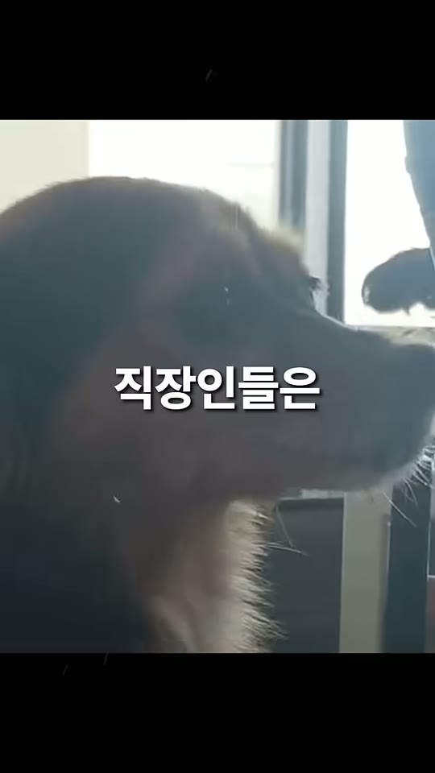
요즘 미국 애들 휴가 안 쓰는 이유
조회수 631,336좋아요 17,560댓글 155업로드 2024-05-24길이 60.07초608x1080 · 30fps · 9:16 · -12.7 LUFS(LRA 2.5)
'미국 직장인이 휴가를 안 쓴다'는 의외의 사실로 시작해 영어 표현 'secret PTO(몰래 쉬는 유급휴가)'를 인터뷰 인용·통계·동물/카툰 밈으로 풀고, '여러분도 월급 루팡 중?'이라는 질문으로 끝내는 60초 영어+직장 트렌드 쇼츠
🔥 떡상 이유
- 의외성 훅('미국 애들이 휴가를 안 쓴다?'): 한국인의 '미국=휴가 천국' 고정관념을 깨는 반전
- 영어 표현 1개 학습 포맷(secret PTO): 채널 본업(실전 영어)과 트렌드 뉴스 결합 → 저장·공유 가치
- 동물·카툰 밈 GIF(타자 치는 강아지, 마우스 고양이, 해골 직원): 0.5초 안에 웃음 → 스크롤 정지
- 로컬라이징 브리지('한국어로 월급 루팡'): 미국 이야기를 한국 직장인 경험으로 번역해 공감 폭발
- 숫자 근거(10명 중 4명, 78%)와 언론·조사기관 출처: 가벼운 밈 영상에 신뢰도 부여
- 호스트 ECU 0.47초 츳코미('뭔 말이야?', '왤까요?'): 정보 구간 사이 리듬 리셋
- 엔딩 질문+능청 곁눈질('혹시 taking secret PTO 하고 계신가요?'): 댓글 유도 + 첫 장면(일하는 척 강아지)과 주제 루프
hook0~2.9초: '요즘 미국 직장인들은 휴가를 안 쓴다고 합니다' + 타자 치는 강아지 GIF + '뭘까요?'
conflict2.9~31.6초: 상사 눈치 때문에 말 못 하고 몰래 쉬는 'secret PTO' — 마우스만 움직이며 일하는 척(월급 루팡)
payoff31.6~56.2초: 표현 공개(I'm taking secret PTO) + 78% 통계 + 원인(압박·게으름뱅이 낙인·눈치)
loop마지막 '혹시 taking secret PTO 하고 계신가요?' 곁눈질 → 첫 장면 '일하는 척 강아지'로 이어져 반복 재생 자연스러움
⏱ 편집 리듬
컷 수23평균 컷 길이2.61최단/최장0.47 / 10.93분당 컷23.0해석실제 장면 23개(검출 78개 중 GIF 루프·해골 떨림·자막 교체 오검출 병합). 영어 인용/통계 텍스트 카드가 7.2초·10.9초로 길고, 그 사이를 0.5~2.7초 밈·호스트 컷이 빠르게 채움. 한국어 자막은 0.5초마다 교체.
🧭 전체 구성 (챕터)
| 구간 | 이름 | 내용 | 이탈 방지 장치 |
|---|---|---|---|
| 0.0–2.87s | 훅 | 미국 직장인 휴가 안 씀 + 뭘까요? | 의외성 + 동물 GIF |
| 2.87–14.83s | 영어 인용·용어 풀이 | 인터뷰 2문장, PTO=Paid Time Off, CNBC 출처 | 영어+번역 2단, 키워드 형광·펀치인 |
| 14.83–31.63s | 현상 설명 | 10명 중 4명 몰래 쉼, 마우스만 움직임 = 월급 루팡 | 밈 5연타 + 호스트 츳코미 |
| 31.63–42.57s | 표현 공개·통계 | I'm taking secret PTO, 78%, Gen Z·밀레니얼 | 큰 컬러 텍스트 → 기사 인용 박스 |
| 42.57–56.17s | 원인 | 멈추면 안 된다는 압박·게으름뱅이 낙인·눈치 | '왤까요?' + 감정 B롤 |
| 56.17–60.07s | 질문 엔딩 | 여러분은? 혹시 secret PTO 중? | 시청자 질문 + 능청 곁눈질 펀치인 |
대본 공식① 의외 사실 단정('~한다고 합니다') → ② '뭘까요?' → ③ 원어민 인터뷰 영어 문장+반말 번역('~거지') → ④ 약어 풀이('즉 ~를 의미합니다') → ⑤ 언론 출처+숫자 → ⑥ 호스트 되묻기('뭔 말이야?') → ⑦ 두 번째 인용으로 구체 행동 → ⑧ 한국어 대응어('한국어로 월급 루팡') → ⑨ 표현 정식 공개('이걸 미국에서는 ~라고 말하는 겁니다') → ⑩ 조사 통계 → ⑪ '왤까요?' 원인 2개 → ⑫ 한국식 요약('눈치가 보인다') → ⑬ 시청자 2단 질문('여러분은~? 아니면 혹시~?'). 존댓말 내레이션 + 인용 번역만 반말, 영어 키워드 5회 반복.
첫 30초 대본 원문요즘 미국 직장인들은 휴가를 안 쓴다고 합니다. 뭘까요? (영어) I feel stressed asking my boss for time off. 상사한테 일정 조율하는 거 스트레스야. (영어) So I just take secret PTO. 그래서 그냥 비밀 유급 휴가 쓰는 거지. 자, 여기서 PTO는 Paid Time Off, 즉 유급 휴가를 의미합니다. 최근 미국 CNBC 뉴스에 따르면 밀레니얼 세대 10명 중 4명은 상사에게 알리지 않고 secret PTO, 즉 비밀 유급 휴가를 쓰고 있다고 하는데요. 비밀 유급 휴가? 뭔 말이야? (영어) I move my mouse to show I'm active, even when I'm not really working. 일하지 않을 때도 마우스를 움직여서 일하는 중인 것처럼 하는 거지. 한국어로 월급 루팡, 월급 도둑이라고 하죠. 일을 안 하는데 하는 척하는. 이걸 미국에서는 I'm taking secret PTO, 나 비밀 유급 휴가 쓰는 중이라고 말하는 겁니다. 해리스 폴 조사에 따르면 78%의 미국 노동자들이 PTO를 모두 사용하지 않는다고 답했으며, 특히 Gen Z와 밀레니얼 세대에서 높게 나타났습니다. 왤까요? 해리스 폴의 최고 전략 책임자(원본은 실명 — 리메이크 시 가상 인물)에 따르면, 젊은 직장인들은 일을 멈추면 안 된다는 강한 압박을 느끼고 게으름뱅이로 보이는 것을 두려워하기 때문입니다. 휴가 쓰기엔 눈치가 보인다는 거죠. 그래서 휴가 쓰겠다고는 못 하고 secret PTO를 쓰는 사람만 늘어나는 겁니다. 여러분은 휴가 잘 쓰고 계신가요? 아니면 혹시 taking secret PTO 하고 계신가요?
🎞 B롤·삽입 유형
| 유형 | 빈도 | 제작법 |
|---|---|---|
| 호스트 2D 마스코트(의자 전신/얼굴 ECU) | 분당 약 6회 | 정지 일러스트 + 입·눈 교체(또는 AI 립싱크) |
| 검정 텍스트/영어 인용 카드 | 분당 약 4회(총 약 23초) | HyperFrames/ASS: 흰 박스 영문+번역+형광 하이라이트 |
| 동물 GIF(강아지·고양이·원숭이) | 분당 약 5회 | AI 생성 동물 루프(리메이크에선 햄스터로 통일) |
| 카툰/인형 밈·레트로 푸티지 | 분당 약 5회 | 오리지널 캐릭터로 AI 생성(원본 IP 사용 금지) |
🎨 스타일 바이블
룩검정 9:16 캔버스 위 '2D 손그림 악마 호스트 + 동물 GIF + TV 카툰/인형 밈 + 레트로·오피스 실사 + 영어 인용 텍스트 카드' 콜라주, 전 구간 흰 먼지 필름 오버레이조명호스트 플랫 셀 / B롤은 원본(폰 영상·형광등 오피스·세피아 레트로) 그대로색#000000(캔버스), #FFFFFF(자막·인용 박스), #F7DE12(한국어 키워드 노랑), #F2FF1A(영어 형광 하이라이트), #9E0009(영어 키워드·강조 박스 딥레드), #B4352C(호스트), #771E22(의자)렌즈B롤: 폰/스톡 24~50mm, 동물 ECU는 얕은 심도 / 펀치인: 10.03s 인용 카드 350%, 28.43s 인형 112%, 58.13s 여성 149%(디지털 크롭)세트물리적 세트 없음 — 호스트는 검정 배경 + 자주색 윙백 의자(WS 버전은 뒤에 큰 검은 뿔 실루엣)자막 스타일고정 제목 없음. ① 한국어 1어절 자막: ExtraBold 흰색(1920 기준 약 92px, 글자 높이 ≈4.2%) 소프트 그림자, 정중앙 y≈50%, 0.4~0.6초 교체, 70→100% 팝. ② 영어 인용: 흰 사각 박스 안 검정 Arial류 레귤러(작게, 글자 높이 ≈1.8%) y≈43%, 아래 y≈46% 흰 볼드 번역. 영어 키워드는 노랑 형광 박스(#F2FF1A), 한국어 키워드는 빨강 박스(#9E0009) 흰 글씨. ③ 대형 카드: 'Paid Time Off/I'm taking secret PTO' 딥레드 굵은 영문, '유급 휴가/나 비밀 유급 휴가 쓰는 중' 노랑 볼드 2줄.워터마크채널 워터마크 없음. 일부 B롤 우하단에 블러 처리된 원본 워터마크 흔적
알간지 2D 악마(호스트) — 플랫 2D 웹툰 악마, 벽돌빨강 달걀형 몸(#B4352C), 짧은 회색 뿔, 호박색 반쯤 감긴 눈, 가슴 X자 반창고 2개, 자주색 윙백 의자. 무표정 츳코미 담당. 여성 내레이터 목소리
캐릭터 시트 프롬프트Character sheet, 9:16, flat 2D hand-drawn webcomic cartoon devil mascot with thick black ink outlines and flat cel colors, tall egg-shaped brick-red head that merges into the body (#B4352C), two small curved charcoal horns (#322831), half-lidded amber-yellow eyes with tiny dark pupils, thick straight dark eyebrows, small puckered dark-red lips, two crossed beige band-aids on the chest, long thin arms with three-fingered hands, deadpan smug expression, no gradients, no 3D shading, slouching lazily in a dark maroon wingback armchair (#771E22) with short wooden legs, pure black background (#000000); views: full body in chair, wide shot with huge horn silhouette behind the chair, extreme close-up head; expressions: deadpan, wide-open mouth, clenched-teeth annoyed, 'o' mouth
동물 버전 캐릭터Character sheet, 9:16, flat 2D hand-drawn webcomic cartoon hamster mascot 'Hamzzi' with thick black ink outlines and flat cel colors, chubby round golden-orange hamster (#E39A3B) with cream cheeks and belly (#F6E3C4), tiny red devil-horn headband (brand nod), half-lidded deadpan black eyes, thick short dark eyebrows, tiny pink nose, small puckered mouth, two crossed beige band-aids on the chest, tiny pink paws, no gradients, no 3D shading, slouching lazily in a dark maroon wingback armchair (#771E22) with short wooden legs, pure black background (#000000); views: full body in chair, wide shot with huge horn silhouette behind the chair, extreme close-up head; expressions: deadpan, wide-open mouth, clenched-teeth annoyed, 'o' mouth
B롤 인물(가상) — 조사기관 전략 책임자(원본은 실존 인물 사진 → 가상 인물로 교체), 레트로 사무실 여성, 몰래 나가는 남직원, 능청 여직원 — 전부 가상 인물
캐릭터 시트 프롬프트Fictional office workers, no celebrity or real-person likeness, natural office lighting, 9:16
동물 버전 캐릭터Same roles as golden hamsters in office clothes, 9:16
🔊 오디오
목소리여성 한국어 내레이터 1인(밝고 빠름, 약 7음절/초) + 영어 인용 3문장은 원어민 여성 음성(추정 TTS 또는 인터뷰 클립)BGM잔잔한 로파이 BGM(추정) 약 90 BPM, 보이스 아래 덕킹효과음0.00 키보드 타닥(추정)
2.33 / 21.03 / 42.57 호스트 ECU 팝(추정)
10.03 펀치인 훅(추정)
12.90 아이콘 뽁(추정)
24.63 마우스 딸깍(추정)
58.13 펀치인 훅(추정)라우드니스-12.7TTS 팁한국어: 밝은 여성 TTS 1.15x, '뭘까요?/뭔 말이야?/왤까요?'는 톤 올리고 앞 100ms 쉼, 인용 번역('~거지')은 친구 말투로 가볍게. 영어: 미국 20대 여성 캐주얼 톤, 'secret PTO'는 또렷하게 강조, 속도 1.0x.
BGM 생성 프롬프트Light chill lo-fi office groove, 90 BPM, soft Rhodes chords, muted bass, gentle vinyl crackle, playful sneaky mood, no vocals, seamless loop, 60 seconds
🎬 컷별 완전 분해 (23개)
컷 1 · 훅 — '미국 직장인이 휴가를 안 쓴다?' 의외성 + 일하는 강아지 귀여움으로 스크롤 정지
0.0s → 2.33s (2.33s)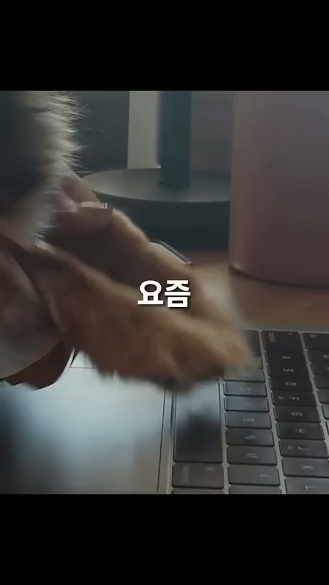

강아지(측면)
키보드+앞발
중앙 1어절 자막
샷CU(측면)앵글아이레벨 측면카메라고정(원본 GIF 루프). 병합: 0.13·0.27·0.43·0.57·0.73·1.03·1.10·1.17·1.50·1.67·1.97·2.27 (타자 치는 발 움직임·자막 교체 오검출)구도레터박스 밴드 y 15~84%. 털 긴 강아지가 옆모습으로 노트북 키보드 위에 앞발을 올려 타자 치듯 움직임, 창가 역광. 자막 y≈50%동작강아지가 앞발로 키보드를 두드리며 일하는 척대사내레이터(여): 요즘 미국 직장인들은 휴가를 안 쓴다고 합니다화면 자막미국 → 직장인들은 → 휴가를 → 안 쓴다고 → 합니다들어오는 전환없음(콜드오픈, 첫 프레임부터 귀여운 동물 GIF + 자막)효과음/음악BGM 인(추정), 키보드 타닥(추정)역할훅 — '미국 직장인이 휴가를 안 쓴다?' 의외성 + 일하는 강아지 귀여움으로 스크롤 정지
1순위
hailuo-2-3과장된 만화 리액션(밈) 동작이 빠르고 저렴
2순위
pixverse-v62D 카툰 스타일 유지력 좋음
3순위
grok-imagine-video-1-5짧은 코믹 루프 대안
① 이미지 프롬프트 (원본 클론)9:16 vertical letterboxed band (15-84% height) on black: side profile close-up of a fluffy long-haired brown dog sitting at a laptop, both front paws on the keyboard as if typing, bright window backlight, casual home office, handheld phone-video look
② 영상 프롬프트 (원본 클론)The dog paws at the keyboard repeatedly like typing, head bobbing, looping GIF feel, 2.3s
③ 동물 버전 이미지 프롬프트9:16 letterboxed band: side profile close-up of a golden hamster sitting at a tiny laptop, both front paws tapping the keyboard as if typing, bright window backlight, handheld phone-video look
④ 동물 버전 영상 프롬프트The hamster taps the keyboard rapidly with both paws, cheeks puffing, looping GIF feel, 2.3s
네거티브copyrighted cartoon characters, celebrity likeness, real person likeness, brand logos, readable text, subtitles, watermark, extra fingers, deformed hands, distorted faces, blurry, low resolution, jpeg artifacts, oversaturated
컷 2 · 질문 — 이유 궁금증(오픈 루프)
2.33s → 2.87s (0.53s)
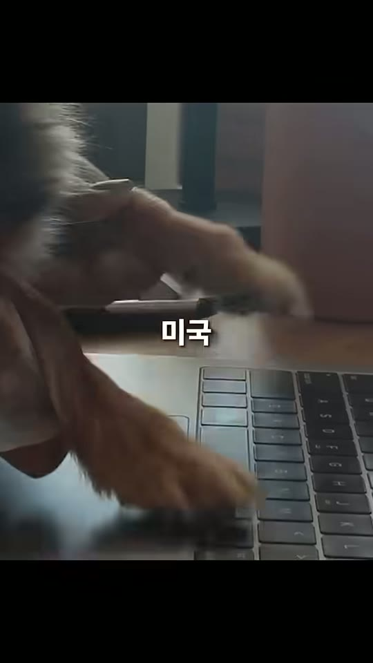
악마 얼굴 클로즈업(뿔은 상단 모서리)
중앙 1어절 자막
샷ECU(얼굴)앵글아이레벨 정면카메라고정구도얼굴 꽉 채움(y 9~99%), 입 크게 벌림동작악마가 입을 크게 벌려 질문대사내레이터: 뭘까요?(원 발화 추정: 왜일까요)화면 자막뭘까요?들어오는 전환하드컷 + FS 없이 곧장 ECU효과음/음악팝(추정)역할질문 — 이유 궁금증(오픈 루프)
1순위
minimax-h3대사 오디오+입모양 동시 생성, 무료·팀 기본(2D라 입만 살짝 움직이면 충분)
2순위
kling-v3-omni레퍼런스 이미지로 2D 캐릭터 선·색 일관성 유지하며 립싱크
3순위
hailuo-2-3눈 굴리기·입 벌림 같은 과장 코믹 리액션이 빠르고 싸다
① 이미지 프롬프트 (원본 클론)9:16 vertical 1080x1920, extreme close-up of the head filling the whole frame, flat 2D hand-drawn webcomic cartoon devil mascot with thick black ink outlines and flat cel colors, tall egg-shaped brick-red head that merges into the body (#B4352C), two small curved charcoal horns (#322831), half-lidded amber-yellow eyes with tiny dark pupils, thick straight dark eyebrows, small puckered dark-red lips, two crossed beige band-aids on the chest, long thin arms with three-fingered hands, deadpan smug expression, no gradients, no 3D shading, expression: mouth wide open, eyebrows raised, eyes looking at camera, horns cut off at the top corners, maroon armchair back barely visible behind, band-aids visible at the bottom edge, straight-on
② 영상 프롬프트 (원본 클론)Static extreme close-up, 2D limited animation: eyes dart once to camera, mouth pops open on the stressed syllable, quick 1-frame squash. Duration 0.53s. Line: '뭘까요?'
③ 동물 버전 이미지 프롬프트9:16 vertical 1080x1920, extreme close-up of the head filling the whole frame, flat 2D hand-drawn webcomic cartoon hamster mascot 'Hamzzi' with thick black ink outlines and flat cel colors, chubby round golden-orange hamster (#E39A3B) with cream cheeks and belly (#F6E3C4), tiny red devil-horn headband (brand nod), half-lidded deadpan black eyes, thick short dark eyebrows, tiny pink nose, small puckered mouth, two crossed beige band-aids on the chest, tiny pink paws, no gradients, no 3D shading, expression: mouth wide open, eyebrows raised, eyes looking at camera, horn headband cut off at the top corners, maroon armchair back barely visible behind, band-aids visible at the bottom edge, straight-on
④ 동물 버전 영상 프롬프트Static extreme close-up of Hamzzi, 2D limited animation: cheeks puff, eyes dart to camera, mouth pops open on the stressed syllable. Duration 0.53s. Line: '뭘까요?'
네거티브3D render, clay, photoreal, realistic human, live-action presenter, gradient shading, extra limbs, extra fingers, extra horns, deformed face, open mouth teeth close-up, text, letters, captions, watermark, logo, busy background, blurry, low resolution, jpeg artifacts
컷 3 · 영어 표현 학습(채널 본업: 실전 영어) — 인터뷰 원문 제시
2.87s → 10.03s (7.17s)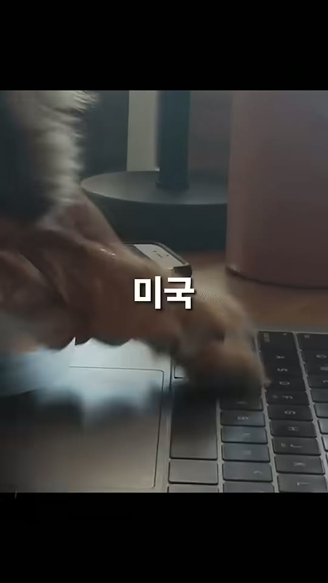
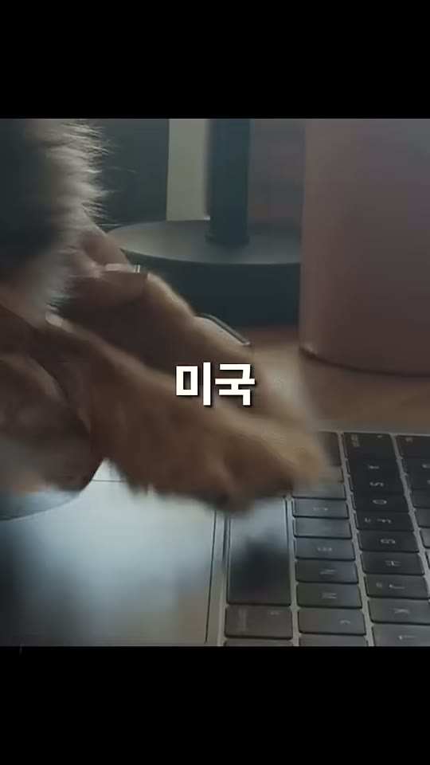
영어 인용 흰 박스
한국어 번역 1줄
샷그래픽(인용 카드)앵글정면카메라고정. 비트: 2.87 영어1 등장 → 5.30 한국어1 추가 → 6.90(추정) 영어2로 교체 → 8.38 한국어2+하이라이트구도순검정 + 먼지. y≈43%에 흰 박스 검정 영문(작은 산세리프), 바로 아래 y≈46%에 흰 한국어 번역, 키워드는 영어 노랑 형광펜 박스·한국어 빨강 박스동작영어 인터뷰 인용문 → 한국어 번역이 한 줄씩 추가대사영어 음성(원어민, 추정 TTS): I feel stressed asking my boss for time off. / 내레이터: 상사한테 일정 조율하는 거 스트레스야 / 영어: So I just take secret PTO. / 내레이터: 그래서 그냥 비밀 유급 휴가 쓰는 거지화면 자막[흰 박스] I feel stressed asking my boss for time off. / 상사한테 일정 조율하는 거 스트레스야 → [흰 박스] so I just take secret PTO.('PTO.' 노랑 형광 #F2FF1A) / 그래서 그냥 [비밀 유급 휴가](빨강 박스 #9E0007) 쓰는 거지들어오는 전환하드컷 → 검정 카드효과음/음악없음(영어 음성 구간은 BGM만 유지)역할영어 표현 학습(채널 본업: 실전 영어) — 인터뷰 원문 제시
1순위
(AI 불필요) FFmpeg/HyperFrames 그래픽검정 배경+텍스트/막대그래프는 코드로 픽셀 단위 재현이 정확
① 이미지 프롬프트 (원본 클론)9:16 vertical 1080x1920 pure black background with falling white dust specks, centered white rectangular caption box with a single line of black English text in a clean sans-serif at 43% height, a line of white Korean text beneath
② 영상 프롬프트 (원본 클론)(AI 불필요) 2867ms 영어 박스1 컷인, 5300ms 한국어1 추가, 6900ms 영어2 교체, 8380ms 'PTO.' 노랑 형광 박스 와이프 150ms + 한국어2(빨강 박스 하이라이트) 추가
③ 동물 버전 이미지 프롬프트Same black quote card; a tiny Hamzzi head peeks from the bottom edge reading the caption
④ 동물 버전 영상 프롬프트(AI 불필요) 동일 타이밍 + 햄찌 빼꼼(선택)
네거티브any photo or illustration, gradients, 3D text, bevel, glow, misspelled Korean, broken Hangul, random letters, watermark, logo, noise banding
컷 4 · 키워드 고정 — 오늘의 영어 표현 'PTO' 각인
10.03s → 11.03s (1.0s)
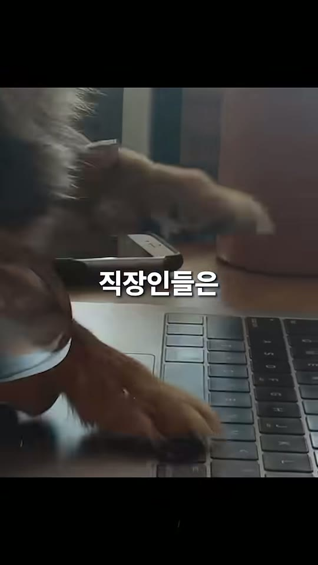
확대된 흰 박스 'ecret PTO.'
샷그래픽 ECU(인용 카드 펀치인)앵글정면카메라앞 카드의 'secret PTO.' 부분을 약 3.5배 디지털 펀치인(좌측 글자 잘림)구도흰 박스가 화면 가로를 넘칠 정도로 확대, y 44~56%, 'PTO.' 노랑 형광 박스가 중앙동작인용문 키워드 확대대사내레이터: 자, 여기서 PTO는화면 자막ecret PTO. (확대, 'PTO.' 노랑 형광)들어오는 전환하드 펀치인(같은 그래픽에 컷으로 줌 350%)효과음/음악줌 '훅' 효과음(추정)역할키워드 고정 — 오늘의 영어 표현 'PTO' 각인
1순위
(AI 불필요) FFmpeg/HyperFrames 그래픽검정 배경+텍스트/막대그래프는 코드로 픽셀 단위 재현이 정확
① 이미지 프롬프트 (원본 클론)9:16 vertical black background, extreme zoom on a white caption box so only 'ecret PTO.' is visible in large black sans-serif, the word 'PTO.' on a neon yellow (#F2FF1A) highlighter box
② 영상 프롬프트 (원본 클론)(AI 불필요) 10033ms 컷과 동시에 scale 3.5 고정(움직임 없음) 1000ms
③ 동물 버전 이미지 프롬프트Same zoomed card
④ 동물 버전 영상 프롬프트(AI 불필요)
네거티브any photo or illustration, gradients, 3D text, bevel, glow, misspelled Korean, broken Hangul, random letters, watermark, logo, noise banding
컷 5 · 정의+출처 — 약어 풀이와 언론 출처로 신뢰 확보
11.03s → 14.83s (3.8s)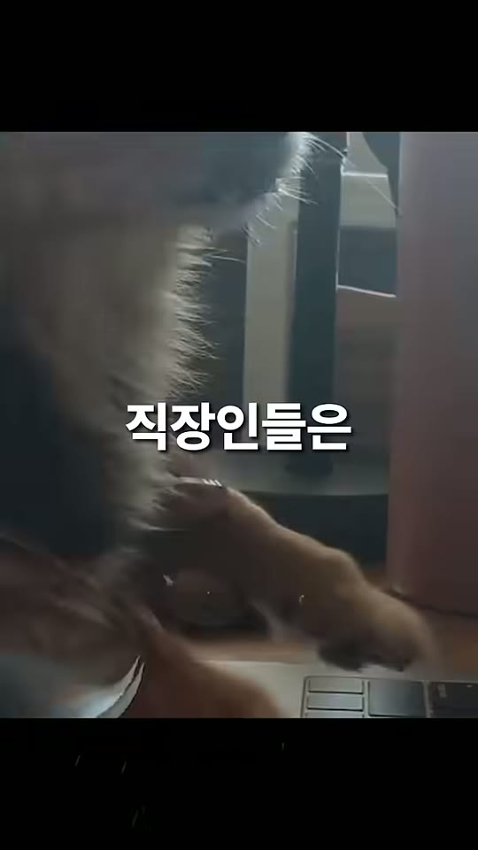
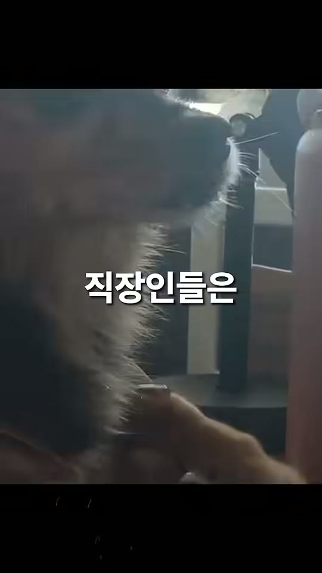
중앙 텍스트
뉴스 앱 아이콘
샷그래픽 카드 시퀀스앵글정면카메라고정. 비트: 11.03 'Paid Time Off'(딥레드) → 12.0(추정) '유급 휴가'(노랑) → 12.9 '최근' + 뉴스 앱 아이콘 페이드인 → 13.5 아이콘 위 'CNBC 뉴스에/따르면'구도순검정, 중앙 y≈50% 텍스트. 13초부터 둥근 사각 앱 아이콘(짙은 남색, 공작 깃털 로고)이 중앙(y 35~70%)에 페이드·스케일 업동작용어 풀이 → 출처 제시대사내레이터: Paid Time Off, 즉 유급 휴가를 의미합니다. 최근 미국 CNBC 뉴스에 따르면화면 자막Paid Time Off(딥레드 #9E0009) → 유급 휴가(노랑 #F7DE12) → 최근 → CNBC 뉴스에 → 따르면(아이콘 위 흰 글씨)들어오는 전환하드컷효과음/음악아이콘 '뽁' 등장음(추정)역할정의+출처 — 약어 풀이와 언론 출처로 신뢰 확보
1순위
(AI 불필요) FFmpeg/HyperFrames 그래픽검정 배경+텍스트/막대그래프는 코드로 픽셀 단위 재현이 정확
① 이미지 프롬프트 (원본 클론)9:16 vertical pure black background with dust specks, a rounded-square app icon of a fictional news network (dark navy, abstract rainbow fan logo, no real brand) centered, white bold Korean caption over it
② 영상 프롬프트 (원본 클론)(AI 불필요) 11033–12000ms 'Paid Time Off' 빨강, 12000–12900ms '유급 휴가' 노랑, 12900ms 아이콘 opacity 0→1·scale 0.8→1.0 500ms, 13500ms 'CNBC 뉴스에'
③ 동물 버전 이미지 프롬프트Same sequence; icon replaced with a fictional 'Hamster News' app icon (navy, sunflower-seed fan logo)
④ 동물 버전 영상 프롬프트(AI 불필요) 동일 타이밍
네거티브any photo or illustration, gradients, 3D text, bevel, glow, misspelled Korean, broken Hangul, random letters, watermark, logo, noise banding
컷 6 · 통계+밈 — '일하다 해골 됨' 과로 밈으로 공감
14.83s → 18.27s (3.43s)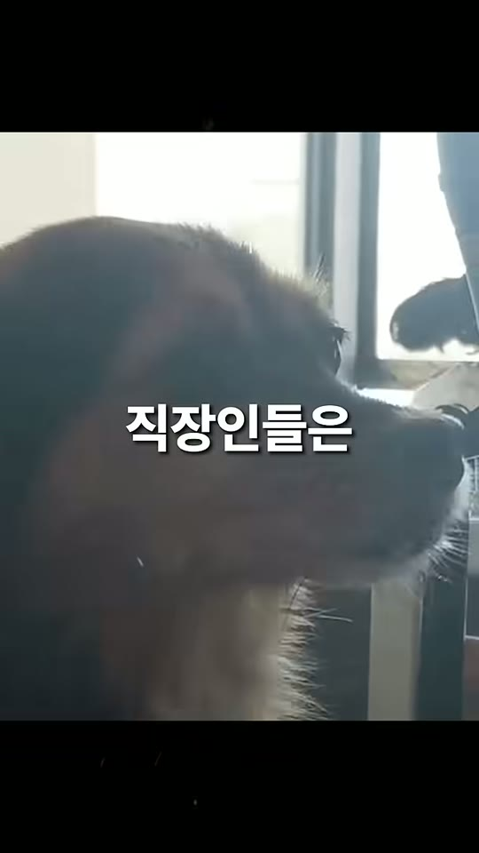
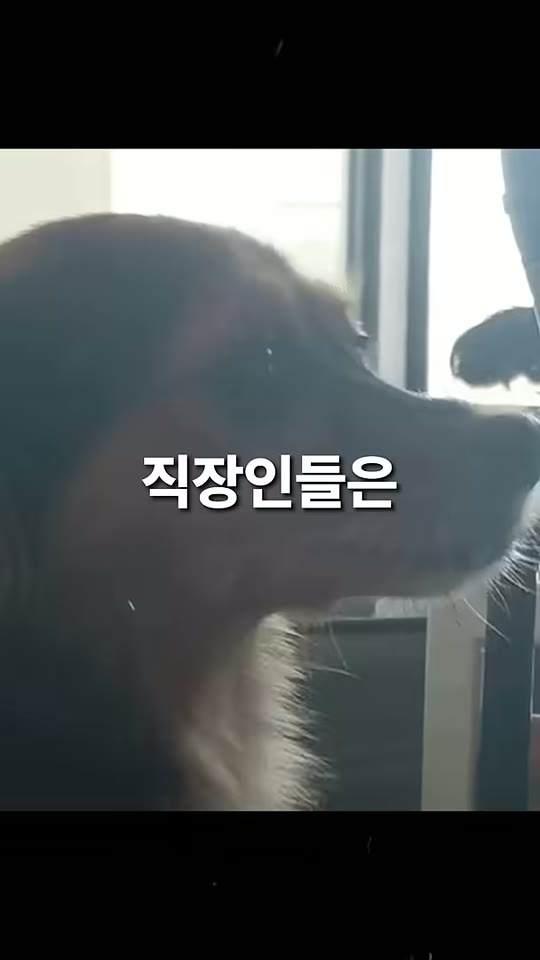
해골 직원
서류 더미 책상
중앙 1어절 자막
샷MS→WS앵글살짝 하이카메라원본 밈 루프 + 17.5s 줌아웃(해골이 의자에 무너진 모습). 병합: 14.97~17.67 사이 28개 마이크로 컷(해골 떨림 애니메이션 오검출)구도풀블리드. 사무실 가죽 의자에 앉은 노란빛 해골이 서류 더미 책상 앞에서 키보드를 두드림, 자막 가슴 y≈50%동작해골이 미친 듯이 타자 치다가 17.5s 의자에 널브러짐대사내레이터: 밀레니얼 세대 10명 중 4명은 상사에게 알리지 않고 secret PTO화면 자막세대 → 10명 중 → 4명은 → 알리지 → 않고 → secret PTO(딥레드)들어오는 전환하드컷효과음/음악타자 소리(추정)역할통계+밈 — '일하다 해골 됨' 과로 밈으로 공감
1순위
hailuo-2-3과장된 만화 리액션(밈) 동작이 빠르고 저렴
2순위
pixverse-v62D 카툰 스타일 유지력 좋음
3순위
grok-imagine-video-1-5짧은 코믹 루프 대안
① 이미지 프롬프트 (원본 클론)9:16 vertical 1080x1920, a yellowed plastic skeleton sitting in a black leather office chair at a wooden desk piled with papers, typing frantically on a keyboard, wood-paneled wall, warm tungsten light, meme-like film look
② 영상 프롬프트 (원본 클론)Skeleton jitters and types frantically, jaw chattering, then at 2.7s the camera pulls back as it slumps over the desk, 3.4s
③ 동물 버전 이미지 프롬프트9:16 vertical, a tiny hamster skeleton costume (cute, not scary) sitting in a black leather office chair at a desk piled with papers, typing frantically, wood-paneled wall, warm light
④ 동물 버전 영상 프롬프트Hamster-in-skeleton-costume types frantically then slumps over the desk as camera pulls back, 3.4s
네거티브copyrighted cartoon characters, celebrity likeness, real person likeness, brand logos, readable text, subtitles, watermark, extra fingers, deformed hands, distorted faces, blurry, low resolution, jpeg artifacts, oversaturated
컷 7 · 밈 — '몰래 딴짓' 공감
18.27s → 20.13s (1.87s)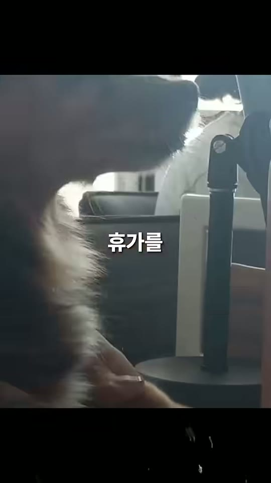
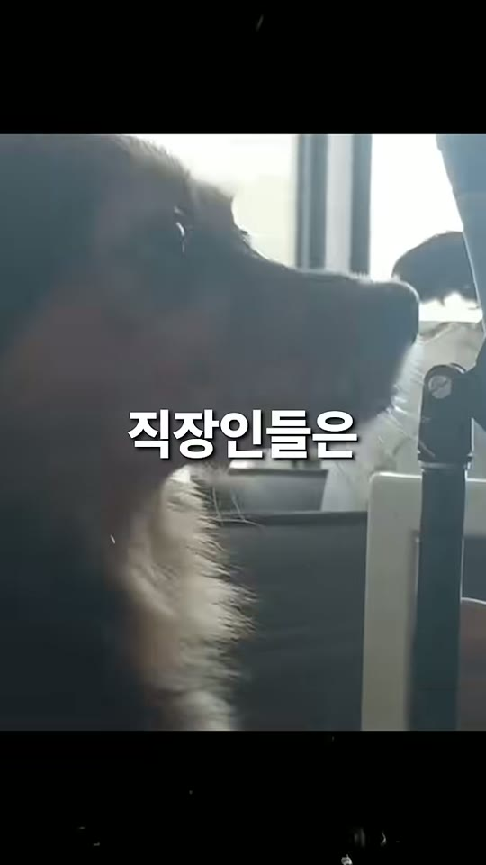
카툰 직원
머그컵
중앙 1어절 자막
샷MCU앵글아이레벨카메라고정구도풀블리드. 밤(푸른 톤) 사무실, 노란 대머리 카툰 남성이 휴대폰을 들고 흐뭇하게 미소, 뒤로 EXIT 표지, 앞에 머그컵동작카툰 직원이 몰래 휴대폰 보며 흐뭇대사내레이터: 비밀 유급 휴가를 쓰고 있다고 하는데요화면 자막비밀 유급 휴가를(노랑) → 쓰고 → 하는데요들어오는 전환하드컷효과음/음악없음역할밈 — '몰래 딴짓' 공감
1순위
hailuo-2-3과장된 만화 리액션(밈) 동작이 빠르고 저렴
2순위
pixverse-v62D 카툰 스타일 유지력 좋음
3순위
grok-imagine-video-1-5짧은 코믹 루프 대안
① 이미지 프롬프트 (원본 클론)9:16 vertical 2D cartoon, TV-animation style: an original bald chubby office worker at night in a dim blue-lit control room, smugly looking at a phone, EXIT sign on the door behind, a blue coffee mug in the foreground, thick outlines
② 영상 프롬프트 (원본 클론)He smirks at his phone, slow blink, locked-off, 1.9s
③ 동물 버전 이미지 프롬프트9:16 vertical 2D cartoon: Hamzzi hamster at night in a dim blue-lit office smugly looking at a phone, EXIT sign behind, blue mug in front
④ 동물 버전 영상 프롬프트Hamzzi smirks at the phone, whiskers twitch, 1.9s
네거티브copyrighted cartoon characters, celebrity likeness, real person likeness, brand logos, readable text, subtitles, watermark, extra fingers, deformed hands, distorted faces, blurry, low resolution, jpeg artifacts, oversaturated
컷 8 · 되묻기 — 시청자 대신 의문 제기
20.13s → 21.03s (0.9s)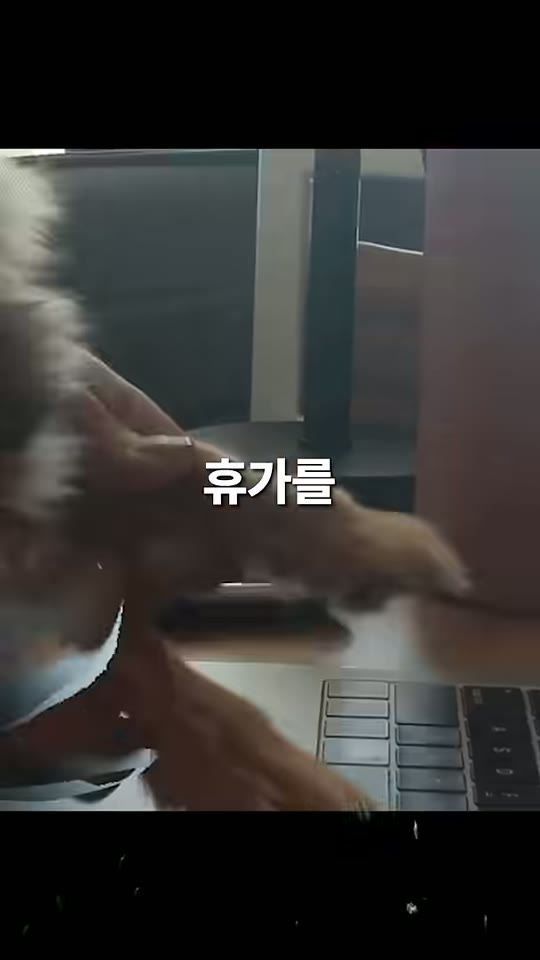

악마+의자
중앙 1어절 자막
샷WS(의자+배경 뿔)앵글아이레벨카메라고정구도의자가 y 22~83% 안에, 뒤로 큰 검은 뿔 실루엣. 자막 y≈50% 양옆에 반짝 표시동작악마가 무표정으로 되물음대사내레이터: 비밀 유급 휴가?화면 자막비밀 유급 휴가?(노랑, 양옆 반짝 ' ')들어오는 전환하드컷효과음/음악갸우뚱 효과음(추정)역할되묻기 — 시청자 대신 의문 제기
1순위
minimax-h3대사 오디오+입모양 동시 생성, 무료·팀 기본(2D라 입만 살짝 움직이면 충분)
2순위
kling-v3-omni레퍼런스 이미지로 2D 캐릭터 선·색 일관성 유지하며 립싱크
3순위
hailuo-2-3눈 굴리기·입 벌림 같은 과장 코믹 리액션이 빠르고 싸다
① 이미지 프롬프트 (원본 클론)9:16 vertical 1080x1920, full shot, flat 2D hand-drawn webcomic cartoon devil mascot with thick black ink outlines and flat cel colors, tall egg-shaped brick-red head that merges into the body (#B4352C), two small curved charcoal horns (#322831), half-lidded amber-yellow eyes with tiny dark pupils, thick straight dark eyebrows, small puckered dark-red lips, two crossed beige band-aids on the chest, long thin arms with three-fingered hands, deadpan smug expression, no gradients, no 3D shading, slouching lazily in a dark maroon wingback armchair (#771E22) with short wooden legs, pure black background (#000000), character centered, head top at 17% of frame height, chair filling the full width, eye-level straight-on, pulled back wider so the chair occupies 22-83% of frame height, a huge black horn silhouette spreading behind the chair
② 영상 프롬프트 (원본 클론)Locked-off camera, limited 2D animation at 12fps: the devil mascot stays slouched, blinks once, lips move slightly in sync with a calm female Korean narrator, tiny head tilt. Duration 0.90s. Line: '비밀 유급 휴가?'
③ 동물 버전 이미지 프롬프트9:16 vertical 1080x1920, full shot, flat 2D hand-drawn webcomic cartoon hamster mascot 'Hamzzi' with thick black ink outlines and flat cel colors, chubby round golden-orange hamster (#E39A3B) with cream cheeks and belly (#F6E3C4), tiny red devil-horn headband (brand nod), half-lidded deadpan black eyes, thick short dark eyebrows, tiny pink nose, small puckered mouth, two crossed beige band-aids on the chest, tiny pink paws, no gradients, no 3D shading, slouching lazily in a dark maroon wingback armchair (#771E22) with short wooden legs, pure black background (#000000), hamster centered, head top at 17% of frame height, chair filling the full width, eye-level straight-on, pulled back wider so the chair occupies 22-83% of frame height, a huge black horn silhouette spreading behind the chair
④ 동물 버전 영상 프롬프트Locked-off camera, limited 2D animation at 12fps: Hamzzi stays slouched in the armchair, whiskers twitch, blinks once, small mouth moves in sync with a calm female Korean narrator. Duration 0.90s. Line: '비밀 유급 휴가?'
네거티브3D render, clay, photoreal, realistic human, live-action presenter, gradient shading, extra limbs, extra fingers, extra horns, deformed face, open mouth teeth close-up, text, letters, captions, watermark, logo, busy background, blurry, low resolution, jpeg artifacts
컷 9 · 리액션 펀치 — 0.47초 반말 츳코미
21.03s → 21.5s (0.47s)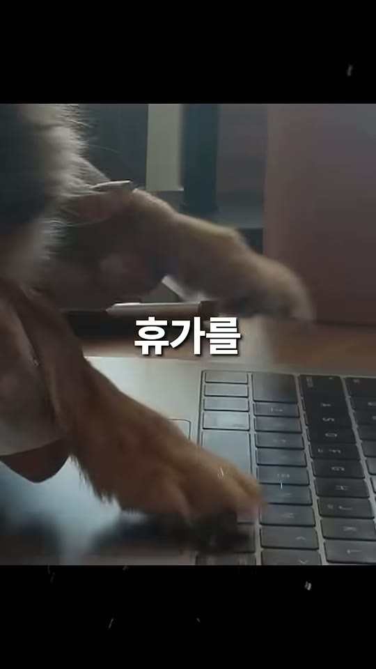
악마 얼굴 클로즈업(뿔은 상단 모서리)
중앙 1어절 자막
샷ECU(얼굴)앵글아이레벨카메라고정구도얼굴 꽉 채움, 이 악문 입동작악마가 이를 드러내며 '뭔 말이야?'대사내레이터: 뭔 말이야?화면 자막뭔 말이야?들어오는 전환하드컷(WS→ECU 점프)효과음/음악팝(추정)역할리액션 펀치 — 0.47초 반말 츳코미
1순위
minimax-h3대사 오디오+입모양 동시 생성, 무료·팀 기본(2D라 입만 살짝 움직이면 충분)
2순위
kling-v3-omni레퍼런스 이미지로 2D 캐릭터 선·색 일관성 유지하며 립싱크
3순위
hailuo-2-3눈 굴리기·입 벌림 같은 과장 코믹 리액션이 빠르고 싸다
① 이미지 프롬프트 (원본 클론)9:16 vertical 1080x1920, extreme close-up of the head filling the whole frame, flat 2D hand-drawn webcomic cartoon devil mascot with thick black ink outlines and flat cel colors, tall egg-shaped brick-red head that merges into the body (#B4352C), two small curved charcoal horns (#322831), half-lidded amber-yellow eyes with tiny dark pupils, thick straight dark eyebrows, small puckered dark-red lips, two crossed beige band-aids on the chest, long thin arms with three-fingered hands, deadpan smug expression, no gradients, no 3D shading, expression: annoyed squint, clenched teeth grin, horns cut off at the top corners, maroon armchair back barely visible behind, band-aids visible at the bottom edge, straight-on
② 영상 프롬프트 (원본 클론)Static extreme close-up, 2D limited animation: eyes dart once to camera, mouth pops open on the stressed syllable, quick 1-frame squash. Duration 0.47s. Line: '뭔 말이야?'
③ 동물 버전 이미지 프롬프트9:16 vertical 1080x1920, extreme close-up of the head filling the whole frame, flat 2D hand-drawn webcomic cartoon hamster mascot 'Hamzzi' with thick black ink outlines and flat cel colors, chubby round golden-orange hamster (#E39A3B) with cream cheeks and belly (#F6E3C4), tiny red devil-horn headband (brand nod), half-lidded deadpan black eyes, thick short dark eyebrows, tiny pink nose, small puckered mouth, two crossed beige band-aids on the chest, tiny pink paws, no gradients, no 3D shading, expression: annoyed squint, clenched teeth grin, horn headband cut off at the top corners, maroon armchair back barely visible behind, band-aids visible at the bottom edge, straight-on
④ 동물 버전 영상 프롬프트Static extreme close-up of Hamzzi, 2D limited animation: cheeks puff, eyes dart to camera, mouth pops open on the stressed syllable. Duration 0.47s. Line: '뭔 말이야?'
네거티브3D render, clay, photoreal, realistic human, live-action presenter, gradient shading, extra limbs, extra fingers, extra horns, deformed face, open mouth teeth close-up, text, letters, captions, watermark, logo, busy background, blurry, low resolution, jpeg artifacts
컷 10 · 영어 표현 학습 2
21.5s → 24.63s (3.13s)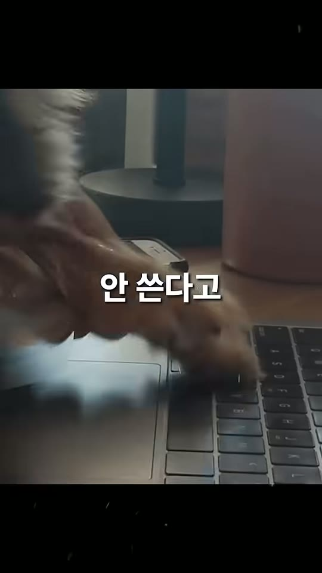
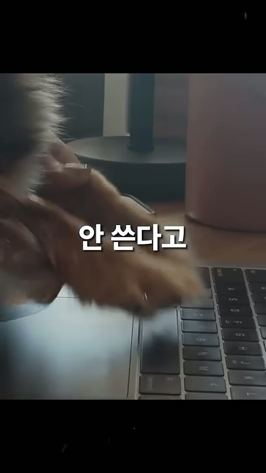
영어 인용 흰 박스
샷그래픽(인용 카드)앵글정면카메라고정. 23.0s 두 번째 줄 추가구도순검정, y≈42% 흰 박스 영문 2줄동작영어 인터뷰 인용 2번대사영어 음성: I move my mouse to show I'm active, even when I'm not really working.화면 자막"I move my mouse to show I'm active, / even when I'm not really working."(흰 박스)들어오는 전환하드컷효과음/음악없음역할영어 표현 학습 2
1순위
(AI 불필요) FFmpeg/HyperFrames 그래픽검정 배경+텍스트/막대그래프는 코드로 픽셀 단위 재현이 정확
① 이미지 프롬프트 (원본 클론)9:16 vertical pure black background with dust, a white caption box with two lines of small black English sans-serif text centered at 42% height
② 영상 프롬프트 (원본 클론)(AI 불필요) 21500ms 1줄, 23000ms 2줄 추가
③ 동물 버전 이미지 프롬프트Same card
④ 동물 버전 영상 프롬프트(AI 불필요)
네거티브any photo or illustration, gradients, 3D text, bevel, glow, misspelled Korean, broken Hangul, random letters, watermark, logo, noise banding
컷 11 · 시각 번역 — 문장을 동물 GIF로 직역
24.63s → 27.3s (2.67s)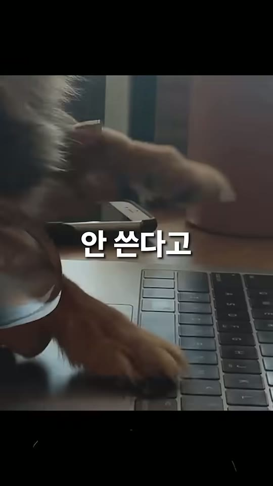
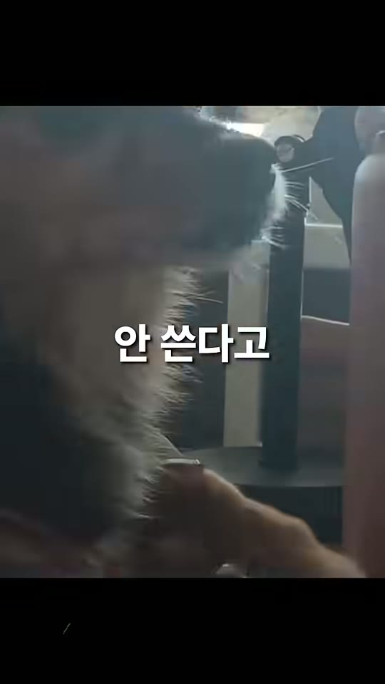
고양이
마우스+앞발
영어 인용 흰 박스
한국어 번역 1줄
샷CU앵글하이 앵글카메라고정(원본 GIF 루프)구도풀블리드(y 0~97%). 턱시도 고양이가 책상 위 흰 마우스에 앞발을 올리고 딴 곳을 봄. 상단 y≈42%에 영어 박스 유지 + 아래 한국어 번역동작고양이가 딴청 피우며 앞발로 마우스만 까딱대사내레이터: 일하지 않을 때도 마우스를 움직여서 일하는 중인 것처럼 하는 거지화면 자막영어 박스 유지 + 일하지 않을 때도 마우스를 움직여서 → 일하는 중인 것처럼 하는 거지들어오는 전환하드컷(같은 인용 박스가 이어져 매치컷 느낌)효과음/음악마우스 딸깍(추정)역할시각 번역 — 문장을 동물 GIF로 직역
1순위
hailuo-2-3과장된 만화 리액션(밈) 동작이 빠르고 저렴
2순위
pixverse-v62D 카툰 스타일 유지력 좋음
3순위
grok-imagine-video-1-5짧은 코믹 루프 대안
① 이미지 프롬프트 (원본 클론)9:16 vertical 1080x1920, high-angle close-up of a black-and-white tuxedo cat sitting at a desk with one paw resting on a white computer mouse, looking away bored, keyboard at the edge, warm indoor light, phone-video look
② 영상 프롬프트 (원본 클론)The cat wiggles the mouse with its paw while looking away, ears twitch, 2.7s
③ 동물 버전 이미지 프롬프트9:16 vertical high-angle close-up of a golden hamster at a desk with one paw on a white computer mouse, looking away bored, keyboard at the edge, warm indoor light
④ 동물 버전 영상 프롬프트The hamster wiggles the mouse with one paw while looking away, 2.7s
네거티브copyrighted cartoon characters, celebrity likeness, real person likeness, brand logos, readable text, subtitles, watermark, extra fingers, deformed hands, distorted faces, blurry, low resolution, jpeg artifacts, oversaturated
컷 12 · 한국 밈 연결 — '월급 루팡'으로 국내 공감
27.3s → 29.4s (2.1s)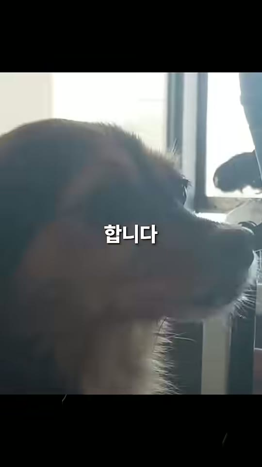
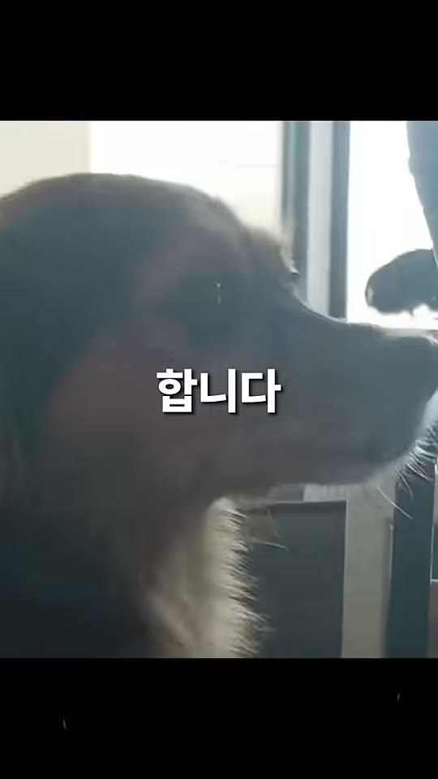
빨간 털 인형
중앙 1어절 자막
샷MS앵글아이레벨카메라고정. 28.43s 약 112% 펀치인(병합 경계 28.43)구도레터박스 밴드 y 14~84%. 빨간 털 인형 몬스터가 노란 티셔츠 입고 유아용 변기에 앉아 좌우로 흔들림동작인형이 몸을 흔들며 멍하니 있음대사내레이터: 한국어로 월급 루팡, 월급 도둑이라고 하죠화면 자막월급 루팡(노랑 강조) → 월급 도둑이라고 → 하죠들어오는 전환하드컷효과음/음악없음역할한국 밈 연결 — '월급 루팡'으로 국내 공감
1순위
hailuo-2-3과장된 만화 리액션(밈) 동작이 빠르고 저렴
2순위
pixverse-v62D 카툰 스타일 유지력 좋음
3순위
grok-imagine-video-1-5짧은 코믹 루프 대안
① 이미지 프롬프트 (원본 클론)9:16 vertical letterboxed band (14-84%): an original red furry puppet monster with big googly eyes and orange nose wearing a yellow t-shirt, sitting on a toddler potty chair in a pastel bathroom, rocking side to side, 90s toy commercial look
② 영상 프롬프트 (원본 클론)Puppet rocks side to side with a blank stare, slight zoom-in at 1.1s, 2.1s
③ 동물 버전 이미지 프롬프트9:16 letterboxed band: Hamzzi hamster in a yellow t-shirt sitting on a tiny potty chair in a pastel bathroom, rocking side to side with a blank stare
④ 동물 버전 영상 프롬프트Hamzzi rocks side to side, blank stare, slight zoom-in at 1.1s, 2.1s
네거티브copyrighted cartoon characters, celebrity likeness, real person likeness, brand logos, readable text, subtitles, watermark, extra fingers, deformed hands, distorted faces, blurry, low resolution, jpeg artifacts, oversaturated
컷 13 · 밈 — '하는 척' 시각화
29.4s → 30.83s (1.43s)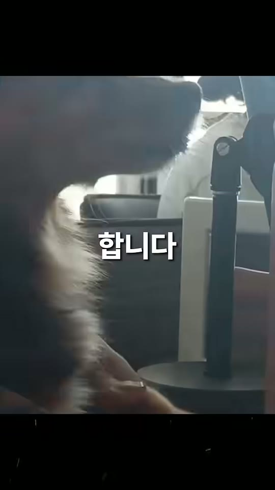
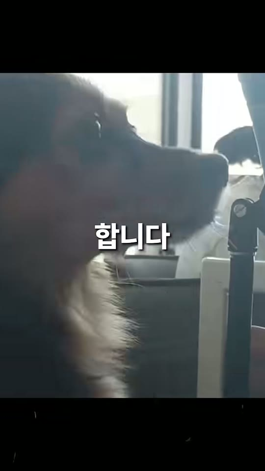
원숭이
중앙 1어절 자막
샷MCU앵글아이레벨카메라고정구도풀블리드. 개코원숭이가 사무실 의자에 앉아 무표정으로 키보드·마우스에 손 올림, 주황 벽동작원숭이가 멍하게 마우스를 만지작대사내레이터: 일을 안 하는데 하는 척하는화면 자막안 하는데 → 하는 → 척하는들어오는 전환하드컷효과음/음악없음역할밈 — '하는 척' 시각화
1순위
hailuo-2-3과장된 만화 리액션(밈) 동작이 빠르고 저렴
2순위
pixverse-v62D 카툰 스타일 유지력 좋음
3순위
grok-imagine-video-1-5짧은 코믹 루프 대안
① 이미지 프롬프트 (원본 클론)9:16 vertical 1080x1920, a grey baboon sitting in an office chair with a bored deadpan face, one hand on a computer mouse, orange wall behind, flash photography look
② 영상 프롬프트 (원본 클론)Baboon slowly blinks and wiggles the mouse, 1.4s
③ 동물 버전 이미지 프롬프트9:16 vertical, a chubby golden hamster in an office chair with a bored deadpan face, one paw on a computer mouse, orange wall behind
④ 동물 버전 영상 프롬프트Hamster slowly blinks and wiggles the mouse, 1.4s
네거티브copyrighted cartoon characters, celebrity likeness, real person likeness, brand logos, readable text, subtitles, watermark, extra fingers, deformed hands, distorted faces, blurry, low resolution, jpeg artifacts, oversaturated
컷 14 · 전환 — 영어 표현 공개 직전
30.83s → 31.63s (0.8s)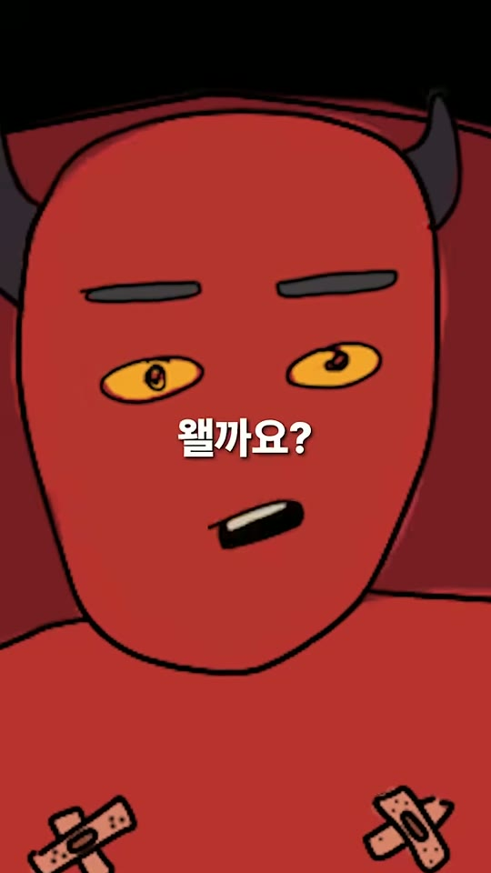
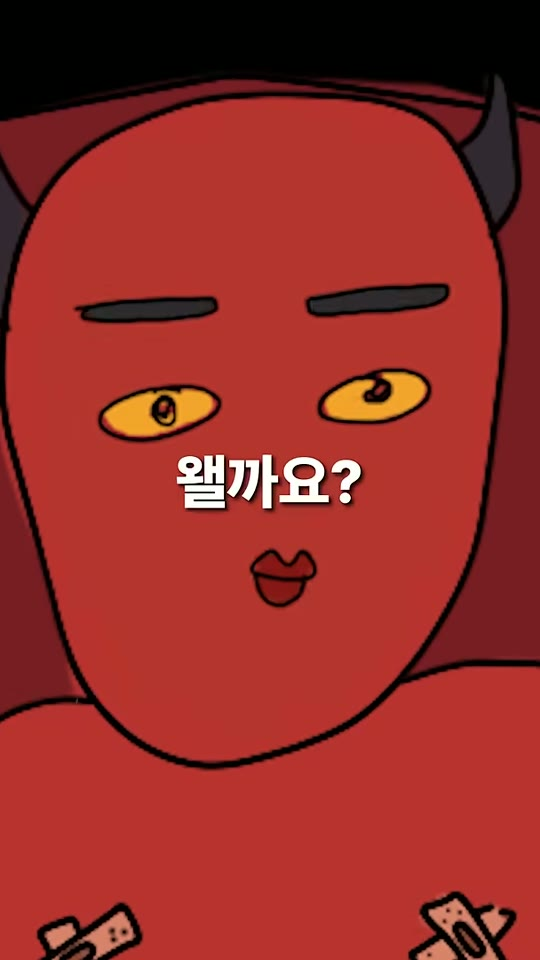
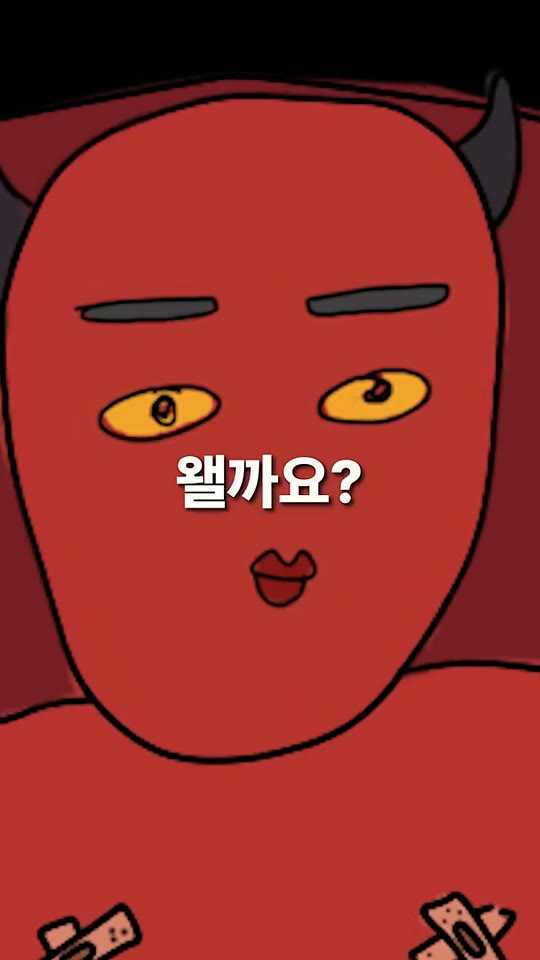
악마 호스트(머리~다리)
안락의자
중앙 1어절 자막
샷FS(의자 전신)앵글아이레벨카메라고정구도의자 전신 y 22~83%동작악마가 입을 벌려 설명 시작대사내레이터: 이걸 미국에서는화면 자막미국에서는들어오는 전환하드컷효과음/음악없음역할전환 — 영어 표현 공개 직전
1순위
minimax-h3대사 오디오+입모양 동시 생성, 무료·팀 기본(2D라 입만 살짝 움직이면 충분)
2순위
kling-v3-omni레퍼런스 이미지로 2D 캐릭터 선·색 일관성 유지하며 립싱크
3순위
hailuo-2-3눈 굴리기·입 벌림 같은 과장 코믹 리액션이 빠르고 싸다
① 이미지 프롬프트 (원본 클론)9:16 vertical 1080x1920, full shot, flat 2D hand-drawn webcomic cartoon devil mascot with thick black ink outlines and flat cel colors, tall egg-shaped brick-red head that merges into the body (#B4352C), two small curved charcoal horns (#322831), half-lidded amber-yellow eyes with tiny dark pupils, thick straight dark eyebrows, small puckered dark-red lips, two crossed beige band-aids on the chest, long thin arms with three-fingered hands, deadpan smug expression, no gradients, no 3D shading, slouching lazily in a dark maroon wingback armchair (#771E22) with short wooden legs, pure black background (#000000), character centered, head top at 17% of frame height, chair filling the full width, eye-level straight-on
② 영상 프롬프트 (원본 클론)Locked-off camera, limited 2D animation at 12fps: the devil mascot stays slouched, blinks once, lips move slightly in sync with a calm female Korean narrator, tiny head tilt. Duration 0.80s. Line: '이걸 미국에서는'
③ 동물 버전 이미지 프롬프트9:16 vertical 1080x1920, full shot, flat 2D hand-drawn webcomic cartoon hamster mascot 'Hamzzi' with thick black ink outlines and flat cel colors, chubby round golden-orange hamster (#E39A3B) with cream cheeks and belly (#F6E3C4), tiny red devil-horn headband (brand nod), half-lidded deadpan black eyes, thick short dark eyebrows, tiny pink nose, small puckered mouth, two crossed beige band-aids on the chest, tiny pink paws, no gradients, no 3D shading, slouching lazily in a dark maroon wingback armchair (#771E22) with short wooden legs, pure black background (#000000), hamster centered, head top at 17% of frame height, chair filling the full width, eye-level straight-on
④ 동물 버전 영상 프롬프트Locked-off camera, limited 2D animation at 12fps: Hamzzi stays slouched in the armchair, whiskers twitch, blinks once, small mouth moves in sync with a calm female Korean narrator. Duration 0.80s. Line: '이걸 미국에서는'
네거티브3D render, clay, photoreal, realistic human, live-action presenter, gradient shading, extra limbs, extra fingers, extra horns, deformed face, open mouth teeth close-up, text, letters, captions, watermark, logo, busy background, blurry, low resolution, jpeg artifacts
컷 15 · 핵심 표현+근거 통계 — 가장 긴 정보 구간(10.9초)을 텍스트만으로 밀어붙임
31.63s → 42.57s (10.93s)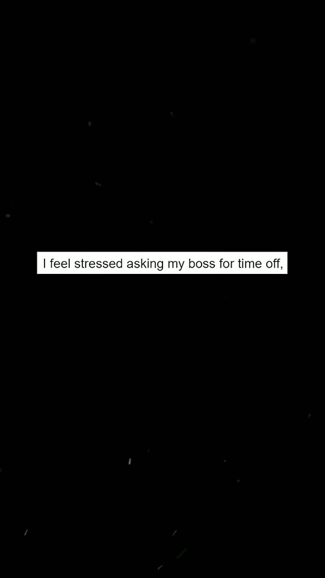
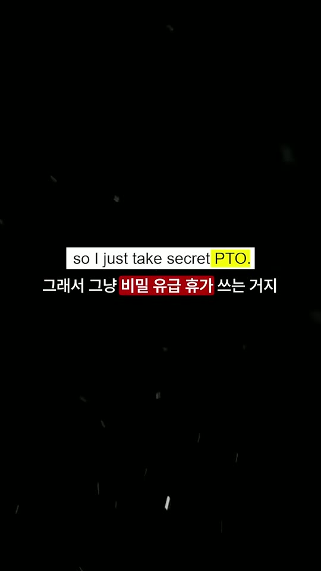
큰 2줄 카드 텍스트
기사 인용 박스
번역 줄
샷그래픽 카드 시퀀스앵글정면카메라고정. 비트: 31.63 'I'm taking secret PTO'(딥레드 2줄) → 33.0 '나 비밀 유급 휴가 쓰는 중'(노랑 2줄) → 35.4 기사 인용 박스 '78%, of U.S. workers…'+'조사에' → 36.4 '78%의 미국 노동자들이'(78% 빨강 박스) → 38.0 'PTO를 모두 사용하지 않는다고 답했으며' → 40.0 'it's highest among Gen Z workers and millennials.' + '특히 Gen Z와 밀레니얼 세대에서' → 41.4 '높게 나타났습니다'구도순검정 + 먼지. 1~2구간: 중앙 y 46~54% 큰 2줄 텍스트. 3구간: y≈43% 가로 꽉 찬 흰 박스(기사 캡처풍 회색 산세리프, '78%,' 노랑 형광) + y≈49% 한국어 번역동작영어 표현 공개 → 번역 → 통계 기사 인용대사내레이터: I'm taking secret PTO. 나 비밀 유급 휴가 쓰는 중이라고 말하는 겁니다. 해리스 폴 조사에 따르면 78%의 미국 노동자들이 PTO를 모두 사용하지 않는다고 답했으며, 특히 Gen Z와 밀레니얼 세대에서 높게 나타났습니다화면 자막I'm taking / secret PTO(딥레드 #9E0009) → 나 비밀 유급 휴가 / 쓰는 중(노랑 #F7DE12) → [기사 박스] 78%,(노랑 형광) of U.S. workers say they don't take all their PTO days, → [78%](빨강 박스)의 미국 노동자들이 → PTO를 모두 사용하지 않는다고 답했으며 → [기사 박스] it's highest among Gen Z workers and millennials. → 특히 Gen Z와 밀레니얼 세대에서 → 높게 나타났습니다들어오는 전환하드컷효과음/음악없음(보이스+BGM)역할핵심 표현+근거 통계 — 가장 긴 정보 구간(10.9초)을 텍스트만으로 밀어붙임
1순위
(AI 불필요) FFmpeg/HyperFrames 그래픽검정 배경+텍스트/막대그래프는 코드로 픽셀 단위 재현이 정확
① 이미지 프롬프트 (원본 클론)9:16 vertical pure black background with dust specks, two lines of large bold deep-red English text 'I'm taking secret PTO' centered
② 영상 프롬프트 (원본 클론)(AI 불필요) 31633ms 빨강 2줄 컷인, 33000ms 노랑 한국어 2줄로 교체, 35400ms 기사 박스 컷인 + '78%,' 형광 와이프 200ms, 36400/38000/40000/41400ms 번역 줄 교체
③ 동물 버전 이미지 프롬프트Same card sequence; a small Hamzzi sticker holding a newspaper appears bottom-right from 35.4s
④ 동물 버전 영상 프롬프트(AI 불필요) 동일 타이밍
네거티브any photo or illustration, gradients, 3D text, bevel, glow, misspelled Korean, broken Hangul, random letters, watermark, logo, noise banding
컷 16 · 질문 — 원인 파트로 넘어가는 경첩
42.57s → 43.03s (0.47s)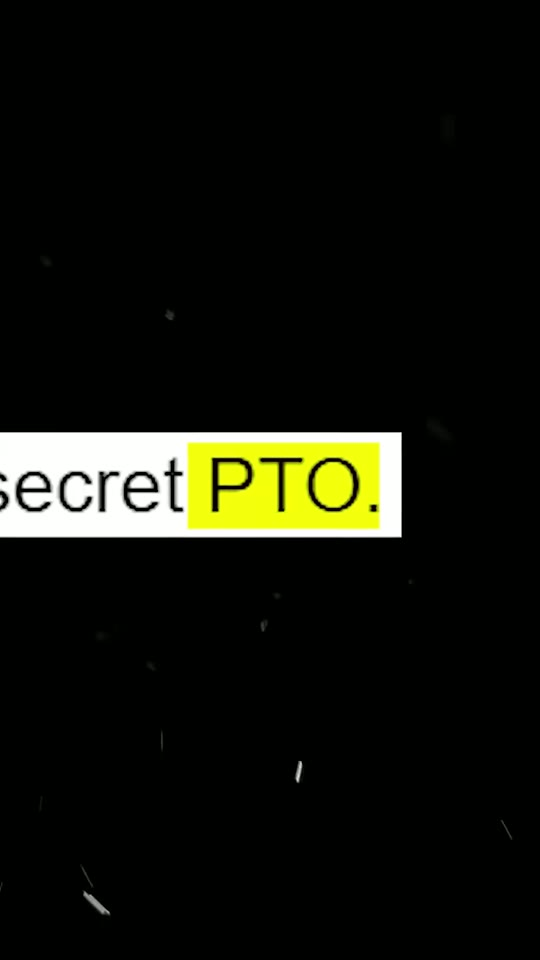
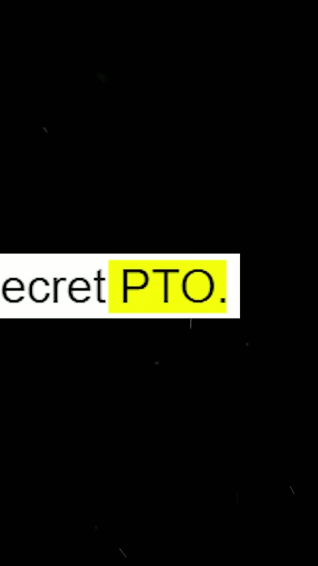
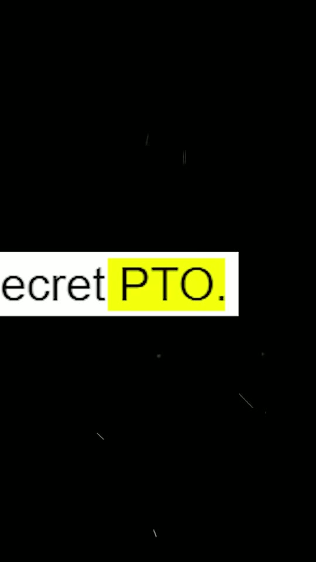
악마 얼굴 클로즈업(뿔은 상단 모서리)
중앙 1어절 자막
샷ECU(얼굴)앵글아이레벨카메라고정구도얼굴 꽉 채움, 입 'o'동작악마가 입을 오므려 질문대사내레이터: 왤까요?화면 자막왤까요?들어오는 전환하드컷효과음/음악팝(추정)역할질문 — 원인 파트로 넘어가는 경첩
1순위
minimax-h3대사 오디오+입모양 동시 생성, 무료·팀 기본(2D라 입만 살짝 움직이면 충분)
2순위
kling-v3-omni레퍼런스 이미지로 2D 캐릭터 선·색 일관성 유지하며 립싱크
3순위
hailuo-2-3눈 굴리기·입 벌림 같은 과장 코믹 리액션이 빠르고 싸다
① 이미지 프롬프트 (원본 클론)9:16 vertical 1080x1920, extreme close-up of the head filling the whole frame, flat 2D hand-drawn webcomic cartoon devil mascot with thick black ink outlines and flat cel colors, tall egg-shaped brick-red head that merges into the body (#B4352C), two small curved charcoal horns (#322831), half-lidded amber-yellow eyes with tiny dark pupils, thick straight dark eyebrows, small puckered dark-red lips, two crossed beige band-aids on the chest, long thin arms with three-fingered hands, deadpan smug expression, no gradients, no 3D shading, expression: eyebrows raised, small round 'o' mouth, horns cut off at the top corners, maroon armchair back barely visible behind, band-aids visible at the bottom edge, straight-on
② 영상 프롬프트 (원본 클론)Static extreme close-up, 2D limited animation: eyes dart once to camera, mouth pops open on the stressed syllable, quick 1-frame squash. Duration 0.47s. Line: '왤까요?'
③ 동물 버전 이미지 프롬프트9:16 vertical 1080x1920, extreme close-up of the head filling the whole frame, flat 2D hand-drawn webcomic cartoon hamster mascot 'Hamzzi' with thick black ink outlines and flat cel colors, chubby round golden-orange hamster (#E39A3B) with cream cheeks and belly (#F6E3C4), tiny red devil-horn headband (brand nod), half-lidded deadpan black eyes, thick short dark eyebrows, tiny pink nose, small puckered mouth, two crossed beige band-aids on the chest, tiny pink paws, no gradients, no 3D shading, expression: eyebrows raised, small round 'o' mouth, horn headband cut off at the top corners, maroon armchair back barely visible behind, band-aids visible at the bottom edge, straight-on
④ 동물 버전 영상 프롬프트Static extreme close-up of Hamzzi, 2D limited animation: cheeks puff, eyes dart to camera, mouth pops open on the stressed syllable. Duration 0.47s. Line: '왤까요?'
네거티브3D render, clay, photoreal, realistic human, live-action presenter, gradient shading, extra limbs, extra fingers, extra horns, deformed face, open mouth teeth close-up, text, letters, captions, watermark, logo, busy background, blurry, low resolution, jpeg artifacts
컷 17 · 권위 인용 — 전문가 얼굴로 신뢰
43.03s → 45.2s (2.17s)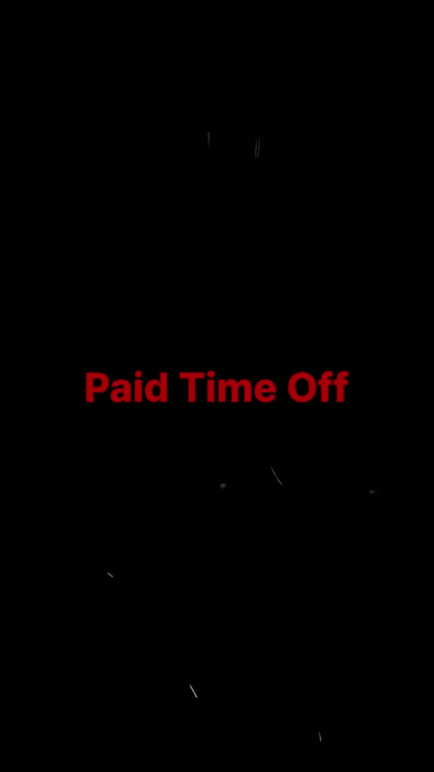
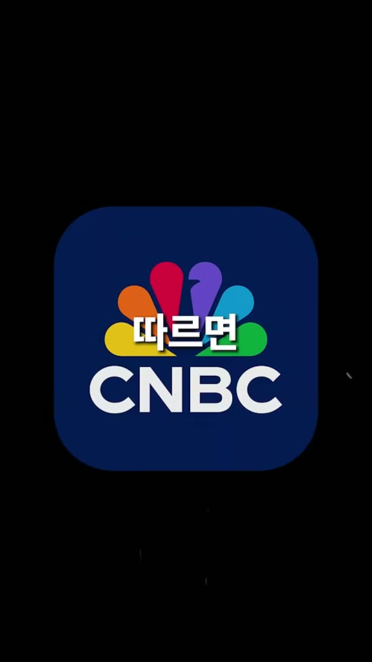
전문가 인물
중앙 1어절 자막
샷MS(인물 사진)앵글아이레벨카메라고정 스틸(미세 줌인 추정)구도풀블리드. 빨간 원피스 여성이 갈색 가죽 소파에 앉아 턱 괴고 미소, 회색 배경동작전문가 프로필 사진대사내레이터: 해리스 폴의 최고 전략 책임자 리비 로드니에 따르면(원본 발화 — 리메이크는 가상 인물 '조사기관 전략 책임자'로 대체)화면 자막해리스 폴의 → 최고 전략 책임자 → 리비 로드니에들어오는 전환하드컷효과음/음악없음역할권위 인용 — 전문가 얼굴로 신뢰
1순위
veo-3-1실사 B롤 질감·카메라 무브가 가장 자연스러움
2순위
kling-v3인물 미세 연기·핸드헬드 느낌
3순위
wan-v3-0저비용 실사 B롤 대안
① 이미지 프롬프트 (원본 클론)9:16 vertical 1080x1920, professional portrait of a fictional smiling woman in her 30s with long wavy brown hair in a red dress, sitting on a cognac leather sofa, chin resting on her hand, grey studio backdrop, soft key light, editorial photo
② 영상 프롬프트 (원본 클론)Very slow push-in on the still portrait, she holds a warm smile, 2.2s
③ 동물 버전 이미지 프롬프트9:16 vertical professional portrait of a golden hamster with a red dress sitting on a cognac leather sofa, chin on paw, smiling, grey studio backdrop
④ 동물 버전 영상 프롬프트Very slow push-in, the hamster holds a warm smile, whiskers twitch, 2.2s
네거티브copyrighted cartoon characters, celebrity likeness, real person likeness, brand logos, readable text, subtitles, watermark, extra fingers, deformed hands, distorted faces, blurry, low resolution, jpeg artifacts, oversaturated
컷 18 · 원인 1 — 압박감을 몸짓으로
45.2s → 48.5s (3.3s)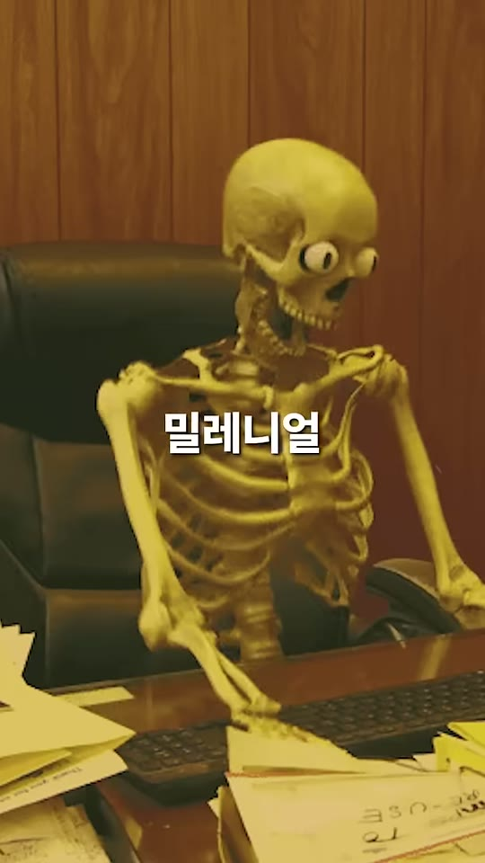

스트레스 여성
중앙 1어절 자막
샷MS앵글아이레벨카메라고정(원본 푸티지). 병합: 45.20 / 47.87·47.93·48.07·48.13·48.20·48.23·48.30·48.37·48.43 (빠른 손동작 오검출)구도풀블리드. 세피아 톤 레트로 사무실, 안경 쓴 여성이 타자기 앞에서 손을 모았다가 머리를 감싸 쥐며 절망동작여성이 두 손을 모아 입에 대고 초조 → 47.9s부터 머리를 쥐어뜯음대사내레이터: 젊은 직장인들은 일을 멈추면 안 된다는 강한 압박을 느끼고화면 자막젊은 → 직장인들은 → 일을 → 멈추면 → 강한 → 압박을 → 느끼고들어오는 전환하드컷효과음/음악없음역할원인 1 — 압박감을 몸짓으로
1순위
seedance-2-0표정 클로즈업(찡그림·놀람) 미세표정 강점
2순위
kling-v3인물 감정 연기 안정적
3순위
veo-3-1실사 질감 최상
① 이미지 프롬프트 (원본 클론)9:16 vertical 1080x1920, sepia-toned vintage 1980s office footage look: a fictional woman with glasses and big hair at a typewriter desk cluttered with crumpled paper, hands pressed together at her mouth anxiously, film grain
② 영상 프롬프트 (원본 클론)She fidgets anxiously, then at 2.7s grabs her head with both hands in despair, 3.3s
③ 동물 버전 이미지 프롬프트9:16 vertical sepia vintage office look: a hamster with glasses at a tiny typewriter desk cluttered with crumpled paper, paws pressed together anxiously, film grain
④ 동물 버전 영상 프롬프트The hamster fidgets, then grabs its head with both paws in despair at 2.7s, 3.3s
네거티브copyrighted cartoon characters, celebrity likeness, real person likeness, brand logos, readable text, subtitles, watermark, extra fingers, deformed hands, distorted faces, blurry, low resolution, jpeg artifacts, oversaturated
컷 19 · 원인 2 — 상사 눈치 밈
48.5s → 50.67s (2.17s)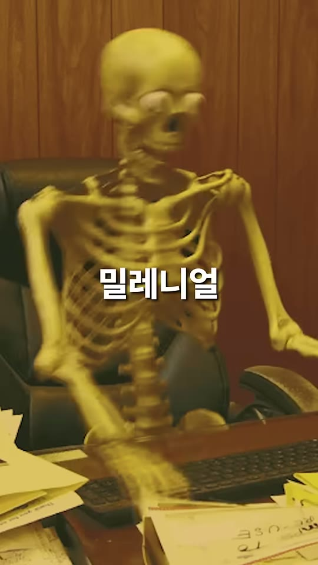
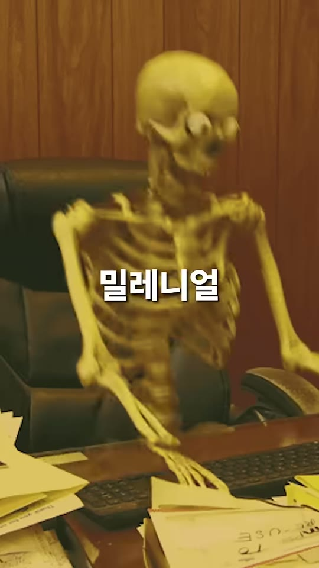
사장·비서
자는 직원+종이
원본 자막 블러
중앙 1어절 자막
샷MS앵글살짝 하이카메라고정구도풀블리드. 카툰 사무실, 노인 사장과 안경 비서가 책상에 엎드려 자는 직원을 내려다봄, 직원 머리 옆 'DON'T WAKE ME I'M WORKING' 종이. 하단 원본 자막 블러(y 85~95%)동작사장이 자는 직원을 째려봄대사내레이터: 게으름뱅이로 보이는 것을 두려워하기 때문입니다화면 자막게으름뱅이로 → 보이는 → 두려워하기 → 때문입니다들어오는 전환하드컷효과음/음악없음역할원인 2 — 상사 눈치 밈
1순위
hailuo-2-3과장된 만화 리액션(밈) 동작이 빠르고 저렴
2순위
pixverse-v62D 카툰 스타일 유지력 좋음
3순위
grok-imagine-video-1-5짧은 코믹 루프 대안
① 이미지 프롬프트 (원본 클론)9:16 vertical 2D cartoon, TV-animation style: an original skinny old boss in a green suit and a bespectacled assistant glaring down at a chubby employee asleep on his desk with a paper sign 'DON'T WAKE ME I'M WORKING' next to his head, office wall behind, thick outlines
② 영상 프롬프트 (원본 클론)Boss leans in glaring, employee snores with mouth open, 2.2s
③ 동물 버전 이미지 프롬프트9:16 vertical 2D cartoon: an old hamster boss in a green suit and a bespectacled hamster assistant glaring down at Hamzzi asleep on the desk with a paper sign 'DON'T WAKE ME I'M WORKING'
④ 동물 버전 영상 프롬프트Boss hamster leans in glaring, Hamzzi snores, 2.2s
네거티브copyrighted cartoon characters, celebrity likeness, real person likeness, brand logos, readable text, subtitles, watermark, extra fingers, deformed hands, distorted faces, blurry, low resolution, jpeg artifacts, oversaturated
컷 20 · 감정 공감 — '눈치' 감정을 슬픈 강아지 눈빛으로
50.67s → 52.57s (1.9s)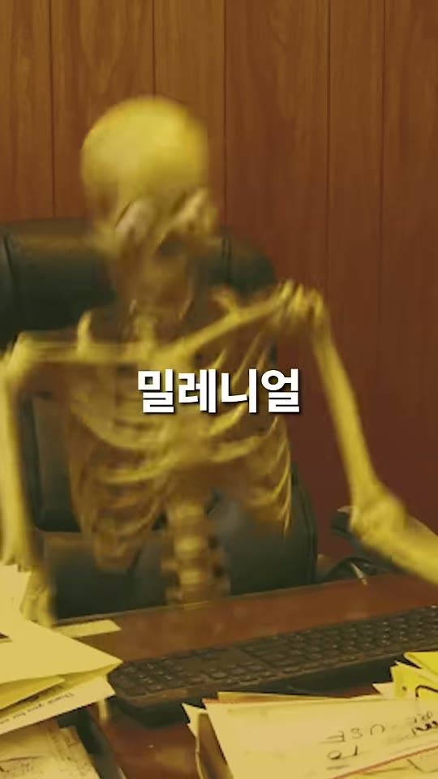

강아지 얼굴
중앙 1어절 자막
샷ECU앵글로우(바닥 높이)카메라고정. 병합: 50.67 / 51.43 / 52.20구도풀블리드. 바닥에 누운 골든 리트리버 얼굴이 화면을 꽉 채움, 촉촉한 눈으로 카메라 응시동작강아지가 누운 채 불쌍한 눈으로 올려다봄대사내레이터: 휴가 쓰기엔 눈치가 보인다는 거죠화면 자막휴가 → 쓰기엔 → 눈치가 → 보인다는 → 거죠들어오는 전환하드컷효과음/음악없음역할감정 공감 — '눈치' 감정을 슬픈 강아지 눈빛으로
1순위
seedance-2-0표정 클로즈업(찡그림·놀람) 미세표정 강점
2순위
kling-v3인물 감정 연기 안정적
3순위
veo-3-1실사 질감 최상
① 이미지 프롬프트 (원본 클론)9:16 vertical 1080x1920, extreme close-up of a cream golden retriever lying with its head on the floor, big glossy sad eyes looking up at camera, dark background, shallow depth of field
② 영상 프롬프트 (원본 클론)The dog's eyes shift up guiltily, eyebrows twitch, 1.9s
③ 동물 버전 이미지 프롬프트9:16 vertical extreme close-up of a golden hamster lying flat on the floor, big glossy sad eyes looking up at camera, dark background
④ 동물 버전 영상 프롬프트Hamster's eyes shift up guiltily, whiskers droop, 1.9s
네거티브copyrighted cartoon characters, celebrity likeness, real person likeness, brand logos, readable text, subtitles, watermark, extra fingers, deformed hands, distorted faces, blurry, low resolution, jpeg artifacts, oversaturated
컷 21 · 결론 시각화 — '몰래 자리 비우기'
52.57s → 56.17s (3.6s)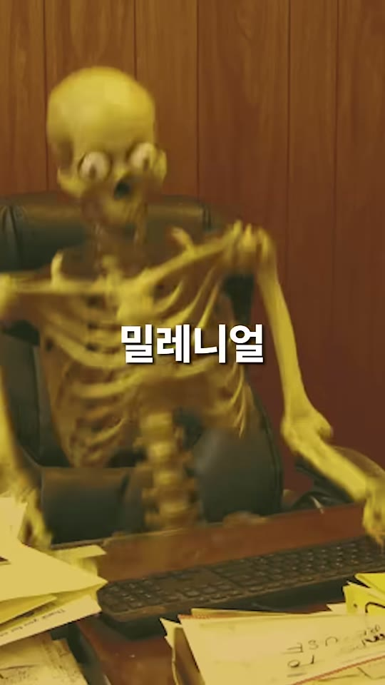
남자 직원
중앙 1어절 자막
샷MS(뒷모습)앵글하이, 핸드헬드카메라핸드헬드 팔로우. 병합: 52.57 / 53.07구도풀블리드. 오픈 오피스 책상에 앉은 남자 뒷모습 → 일어나 슬쩍 걸어 나감, 카메라가 따라가며 문 쪽으로동작직원이 모니터 앞에 앉아 있다가 몰래 자리를 뜸대사내레이터: 그래서 휴가 쓰겠다고는 못 하고 secret PTO를 쓰는 사람만 늘어나는 겁니다화면 자막그래서 → 휴가를 → 쓰겠다고는 → 못 하고 → secret PTO(딥레드)를 → 쓰는 → 사람만 → 겁니다들어오는 전환하드컷효과음/음악없음역할결론 시각화 — '몰래 자리 비우기'
1순위
veo-3-1실사 B롤 질감·카메라 무브가 가장 자연스러움
2순위
kling-v3인물 미세 연기·핸드헬드 느낌
3순위
wan-v3-0저비용 실사 B롤 대안
① 이미지 프롬프트 (원본 클론)9:16 vertical 1080x1920, handheld high-angle shot from behind of a fictional young man in a navy t-shirt at an open-plan office desk with laptops, grey office chair, cool fluorescent light
② 영상 프롬프트 (원본 클론)He glances around, quietly gets up and sneaks away toward a door, handheld camera follows, 3.6s
③ 동물 버전 이미지 프롬프트9:16 vertical handheld high-angle shot from behind of a hamster in a navy t-shirt at an open-plan office desk, grey chair, cool fluorescent light
④ 동물 버전 영상 프롬프트The hamster glances around, hops down and sneaks toward a door, handheld follow, 3.6s
네거티브copyrighted cartoon characters, celebrity likeness, real person likeness, brand logos, readable text, subtitles, watermark, extra fingers, deformed hands, distorted faces, blurry, low resolution, jpeg artifacts, oversaturated
컷 22 · 시청자 질문 — 댓글 유도
56.17s → 57.53s (1.37s)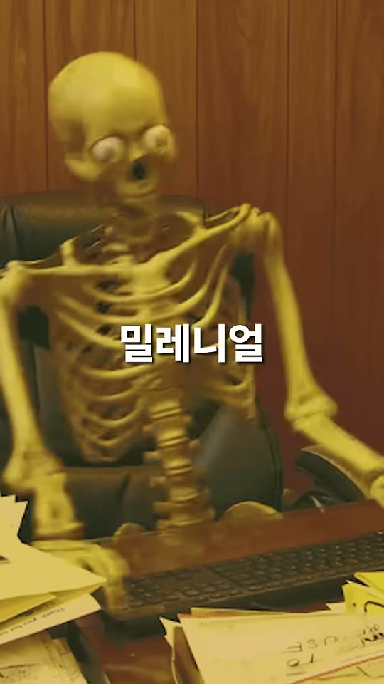
악마 호스트(머리~다리)
안락의자
중앙 1어절 자막
샷FS(의자 전신)앵글아이레벨카메라고정구도의자 전신 y 21~84%동작악마가 무심하게 시청자에게 질문대사내레이터: 여러분은 휴가 잘 쓰고 계신가요?화면 자막여러분은 → 잘 → 계신가요?들어오는 전환하드컷효과음/음악없음역할시청자 질문 — 댓글 유도
1순위
minimax-h3대사 오디오+입모양 동시 생성, 무료·팀 기본(2D라 입만 살짝 움직이면 충분)
2순위
kling-v3-omni레퍼런스 이미지로 2D 캐릭터 선·색 일관성 유지하며 립싱크
3순위
hailuo-2-3눈 굴리기·입 벌림 같은 과장 코믹 리액션이 빠르고 싸다
① 이미지 프롬프트 (원본 클론)9:16 vertical 1080x1920, full shot, flat 2D hand-drawn webcomic cartoon devil mascot with thick black ink outlines and flat cel colors, tall egg-shaped brick-red head that merges into the body (#B4352C), two small curved charcoal horns (#322831), half-lidded amber-yellow eyes with tiny dark pupils, thick straight dark eyebrows, small puckered dark-red lips, two crossed beige band-aids on the chest, long thin arms with three-fingered hands, deadpan smug expression, no gradients, no 3D shading, slouching lazily in a dark maroon wingback armchair (#771E22) with short wooden legs, pure black background (#000000), character centered, head top at 17% of frame height, chair filling the full width, eye-level straight-on
② 영상 프롬프트 (원본 클론)Locked-off camera, limited 2D animation at 12fps: the devil mascot stays slouched, blinks once, lips move slightly in sync with a calm female Korean narrator, tiny head tilt. Duration 1.37s. Line: '여러분은 휴가 잘 쓰고 계신가요?'
③ 동물 버전 이미지 프롬프트9:16 vertical 1080x1920, full shot, flat 2D hand-drawn webcomic cartoon hamster mascot 'Hamzzi' with thick black ink outlines and flat cel colors, chubby round golden-orange hamster (#E39A3B) with cream cheeks and belly (#F6E3C4), tiny red devil-horn headband (brand nod), half-lidded deadpan black eyes, thick short dark eyebrows, tiny pink nose, small puckered mouth, two crossed beige band-aids on the chest, tiny pink paws, no gradients, no 3D shading, slouching lazily in a dark maroon wingback armchair (#771E22) with short wooden legs, pure black background (#000000), hamster centered, head top at 17% of frame height, chair filling the full width, eye-level straight-on
④ 동물 버전 영상 프롬프트Locked-off camera, limited 2D animation at 12fps: Hamzzi stays slouched in the armchair, whiskers twitch, blinks once, small mouth moves in sync with a calm female Korean narrator. Duration 1.37s. Line: '여러분은 휴가 잘 쓰고 계신가요?'
네거티브3D render, clay, photoreal, realistic human, live-action presenter, gradient shading, extra limbs, extra fingers, extra horns, deformed face, open mouth teeth close-up, text, letters, captions, watermark, logo, busy background, blurry, low resolution, jpeg artifacts
컷 23 · 엔딩 펀치 + 루프 — 능청 곁눈질로 웃음, 질문으로 댓글 유도, 끝나면 첫 GIF(일하는 척 강아지)로 자
57.53s → 60.07s (2.54s)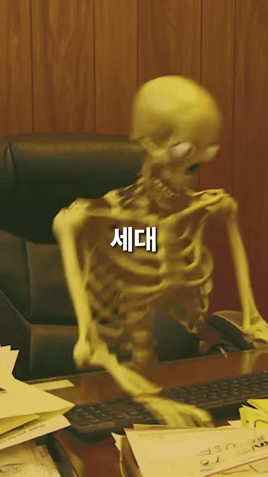
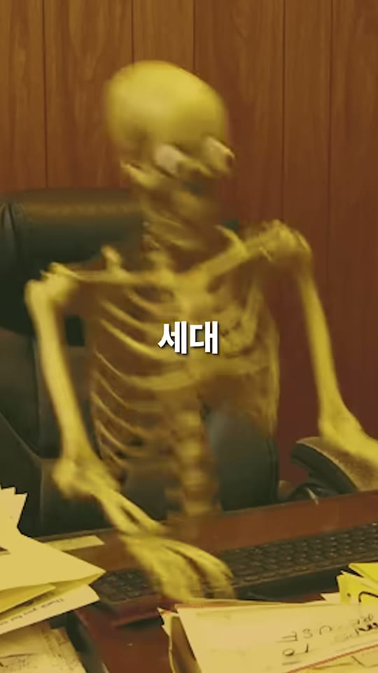
여성 직원
중앙 1어절 자막
샷MS → MCU(펀치인)앵글아이레벨카메라0.6초 레터박스(y 16~83%) 후 58.13s 약 149% 펀치인으로 풀프레임. 병합: 57.53 / 58.13 / 59.30구도사무실 여성이 서류를 정리하다 카메라를 슬쩍 곁눈질하며 능청 미소. 배경 흐린 사무실 사람들동작여성이 바쁜 척 서류를 넘기다 카메라를 보고 능청스럽게 미소대사내레이터: 아니면 혹시 taking secret PTO 하고 계신가요?화면 자막혹시 → taking secret / PTO(딥레드 2줄) → 계신가요?들어오는 전환하드컷 + 58.13s 펀치인효과음/음악펀치인 '훅'(추정)역할엔딩 펀치 + 루프 — 능청 곁눈질로 웃음, 질문으로 댓글 유도, 끝나면 첫 GIF(일하는 척 강아지)로 자연 연결
1순위
seedance-2-0표정 클로즈업(찡그림·놀람) 미세표정 강점
2순위
kling-v3인물 감정 연기 안정적
3순위
veo-3-1실사 질감 최상
① 이미지 프롬프트 (원본 클론)9:16 vertical 1080x1920, a fictional brunette office worker in a lavender t-shirt and white cardigan shuffling papers at a cluttered 90s office desk with a beige desk phone, busy blurred coworkers behind, bright fluorescent light, 90s film look
② 영상 프롬프트 (원본 클론)She shuffles papers pretending to be busy, then slowly side-eyes the camera with a sly smile, 2.5s
③ 동물 버전 이미지 프롬프트9:16 vertical, a hamster in a lavender t-shirt and white cardigan shuffling papers at a cluttered 90s office desk with a beige phone, blurred busy hamster coworkers behind
④ 동물 버전 영상 프롬프트The hamster shuffles papers, then slowly side-eyes the camera with a sly smile, 2.5s
네거티브copyrighted cartoon characters, celebrity likeness, real person likeness, brand logos, readable text, subtitles, watermark, extra fingers, deformed hands, distorted faces, blurry, low resolution, jpeg artifacts, oversaturated
✂️ 편집 키트
타임라인0.00-2.33s 훅; 2.33-2.87s 질문; 2.87-10.03s 영어 표현 학습(채널 본업: 실전 영어); 10.03-11.03s 키워드 고정; 11.03-14.83s 정의+출처; 14.83-18.27s 통계+밈; 18.27-20.13s 밈; 20.13-21.03s 되묻기; 21.03-21.50s 리액션 펀치; 21.50-24.63s 영어 표현 학습 2; 24.63-27.30s 시각 번역; 27.30-29.40s 한국 밈 연결; 29.40-30.83s 밈; 30.83-31.63s 전환; 31.63-42.57s 핵심 표현+근거 통계; 42.57-43.03s 질문; 43.03-45.20s 권위 인용; 45.20-48.50s 원인 1; 48.50-50.67s 원인 2; 50.67-52.57s 감정 공감; 52.57-56.17s 결론 시각화; 56.17-57.53s 시청자 질문; 57.53-60.07s 엔딩 펀치 + 루프
FFmpeg 명령# === 0) 준비물: sc01.mp4 ~ scNN.mp4 (장면별 AI/그래픽 클립, 길이 ≥ len), narration.wav(내레이션 전체), bgm.mp3, subs.ass(아래 ass_subtitle)
# === 원본 확인 결과: 고정 제목 / 16:9 고정 밴드 / 댓글 카드 없음 → 검정 9:16 캔버스 + 장면별 풀블리드 또는 레터박스 밴드 + 화면 정중앙 1어절 자막 + 먼지 오버레이
# === 1) 먼지·스크래치 오버레이(원본 전 구간에 흰 먼지 입자) 합성 생성
ffmpeg -y -f lavfi -i "color=c=black:s=1080x1920:r=30:d=62" -vf "geq=lum='if(lt(random(1),0.00012),255,0)':cb=128:cr=128,dilation,dilation,gblur=sigma=0.7,format=yuv420p" -c:v libx264 -crf 20 dust_overlay.mp4
# === 2) 장면별 9:16 레이아웃 정규화 (FULL=풀블리드 크롭, BAND=측정한 y%에 레터박스 밴드, zoompan=펀치인)
ffmpeg -y -i sc01.mp4 -t 2.33 -vf "scale=1080:1324:force_original_aspect_ratio=increase,crop=1080:1324,pad=1080:1920:0:288:black,fps=30,setsar=1,format=yuv420p" -an -c:v libx264 -preset medium -crf 18 n01.mp4
ffmpeg -y -i sc02.mp4 -t 0.54 -vf "scale=1080:1920:force_original_aspect_ratio=increase,crop=1080:1920,fps=30,setsar=1,format=yuv420p" -an -c:v libx264 -preset medium -crf 18 n02.mp4
ffmpeg -y -i sc03.mp4 -t 7.16 -vf "scale=1080:1920:force_original_aspect_ratio=increase,crop=1080:1920,fps=30,setsar=1,format=yuv420p" -an -c:v libx264 -preset medium -crf 18 n03.mp4
ffmpeg -y -i sc04.mp4 -t 1.00 -vf "scale=1080:1920:force_original_aspect_ratio=increase,crop=1080:1920,fps=30,setsar=1,format=yuv420p" -an -c:v libx264 -preset medium -crf 18 n04.mp4
ffmpeg -y -i sc05.mp4 -t 3.80 -vf "scale=1080:1920:force_original_aspect_ratio=increase,crop=1080:1920,fps=30,setsar=1,format=yuv420p" -an -c:v libx264 -preset medium -crf 18 n05.mp4
ffmpeg -y -i sc06.mp4 -t 3.44 -vf "scale=1080:1920:force_original_aspect_ratio=increase,crop=1080:1920,fps=30,setsar=1,format=yuv420p" -an -c:v libx264 -preset medium -crf 18 n06.mp4
ffmpeg -y -i sc07.mp4 -t 1.86 -vf "scale=1080:1920:force_original_aspect_ratio=increase,crop=1080:1920,fps=30,setsar=1,format=yuv420p" -an -c:v libx264 -preset medium -crf 18 n07.mp4
ffmpeg -y -i sc08.mp4 -t 0.90 -vf "scale=1080:1920:force_original_aspect_ratio=increase,crop=1080:1920,fps=30,setsar=1,format=yuv420p" -an -c:v libx264 -preset medium -crf 18 n08.mp4
ffmpeg -y -i sc09.mp4 -t 0.47 -vf "scale=1080:1920:force_original_aspect_ratio=increase,crop=1080:1920,fps=30,setsar=1,format=yuv420p" -an -c:v libx264 -preset medium -crf 18 n09.mp4
ffmpeg -y -i sc10.mp4 -t 3.13 -vf "scale=1080:1920:force_original_aspect_ratio=increase,crop=1080:1920,fps=30,setsar=1,format=yuv420p" -an -c:v libx264 -preset medium -crf 18 n10.mp4
ffmpeg -y -i sc11.mp4 -t 2.67 -vf "scale=1080:1920:force_original_aspect_ratio=increase,crop=1080:1920,fps=30,setsar=1,format=yuv420p" -an -c:v libx264 -preset medium -crf 18 n11.mp4
ffmpeg -y -i sc12.mp4 -t 2.10 -vf "scale=1080:1344:force_original_aspect_ratio=increase,crop=1080:1344,pad=1080:1920:0:269:black,zoompan=z='if(lt(on,34),1,1.12)':x='iw/2-(iw/zoom/2)':y='ih/2-(ih/zoom/2)':d=1:s=1080x1920:fps=30,fps=30,setsar=1,format=yuv420p" -an -c:v libx264 -preset medium -crf 18 n12.mp4
ffmpeg -y -i sc13.mp4 -t 1.43 -vf "scale=1080:1920:force_original_aspect_ratio=increase,crop=1080:1920,fps=30,setsar=1,format=yuv420p" -an -c:v libx264 -preset medium -crf 18 n13.mp4
ffmpeg -y -i sc14.mp4 -t 0.80 -vf "scale=1080:1920:force_original_aspect_ratio=increase,crop=1080:1920,fps=30,setsar=1,format=yuv420p" -an -c:v libx264 -preset medium -crf 18 n14.mp4
ffmpeg -y -i sc15.mp4 -t 10.94 -vf "scale=1080:1920:force_original_aspect_ratio=increase,crop=1080:1920,fps=30,setsar=1,format=yuv420p" -an -c:v libx264 -preset medium -crf 18 n15.mp4
ffmpeg -y -i sc16.mp4 -t 0.46 -vf "scale=1080:1920:force_original_aspect_ratio=increase,crop=1080:1920,fps=30,setsar=1,format=yuv420p" -an -c:v libx264 -preset medium -crf 18 n16.mp4
ffmpeg -y -i sc17.mp4 -t 2.17 -vf "scale=1080:1920:force_original_aspect_ratio=increase,crop=1080:1920,fps=30,setsar=1,format=yuv420p" -an -c:v libx264 -preset medium -crf 18 n17.mp4
ffmpeg -y -i sc18.mp4 -t 3.30 -vf "scale=1080:1920:force_original_aspect_ratio=increase,crop=1080:1920,fps=30,setsar=1,format=yuv420p" -an -c:v libx264 -preset medium -crf 18 n18.mp4
ffmpeg -y -i sc19.mp4 -t 2.17 -vf "scale=1080:1920:force_original_aspect_ratio=increase,crop=1080:1920,fps=30,setsar=1,format=yuv420p" -an -c:v libx264 -preset medium -crf 18 n19.mp4
ffmpeg -y -i sc20.mp4 -t 1.90 -vf "scale=1080:1920:force_original_aspect_ratio=increase,crop=1080:1920,fps=30,setsar=1,format=yuv420p" -an -c:v libx264 -preset medium -crf 18 n20.mp4
ffmpeg -y -i sc21.mp4 -t 3.60 -vf "scale=1080:1920:force_original_aspect_ratio=increase,crop=1080:1920,fps=30,setsar=1,format=yuv420p" -an -c:v libx264 -preset medium -crf 18 n21.mp4
ffmpeg -y -i sc22.mp4 -t 1.36 -vf "scale=1080:1920:force_original_aspect_ratio=increase,crop=1080:1920,fps=30,setsar=1,format=yuv420p" -an -c:v libx264 -preset medium -crf 18 n22.mp4
ffmpeg -y -i sc23.mp4 -t 2.54 -vf "scale=1080:1286:force_original_aspect_ratio=increase,crop=1080:1286,pad=1080:1920:0:307:black,zoompan=z='if(lt(on,18),1,1.49)':x='iw/2-(iw/zoom/2)':y='ih/2-(ih/zoom/2)':d=1:s=1080x1920:fps=30,fps=30,setsar=1,format=yuv420p" -an -c:v libx264 -preset medium -crf 18 n23.mp4
# === 3) 이어붙이기 (전 구간 하드컷, 전환 효과 없음)
for f in n*.mp4; do echo "file '$f'"; done > list.txt
ffmpeg -y -f concat -safe 0 -i list.txt -c copy video_raw.mp4
# === 4) 먼지 오버레이(screen 35%) + ASS 자막 burn-in + BGM 덕킹 + 라우드니스
ffmpeg -y -i video_raw.mp4 -stream_loop -1 -i dust_overlay.mp4 -i narration.wav -i bgm.mp3 -filter_complex "[1:v]format=gbrp[d];[0:v]format=gbrp[b];[b][d]blend=all_mode=screen:all_opacity=0.35:shortest=1,format=yuv420p,ass=subs.ass[v];[2:a]asplit=2[vo1][vo2];[3:a]volume=0.18[bg];[bg][vo1]sidechaincompress=threshold=0.05:ratio=8:attack=20:release=300[duck];[vo2][duck]amix=inputs=2:duration=first:normalize=0,loudnorm=I=-13:TP=-1:LRA=7[a]" -map "[v]" -map "[a]" -t 60.07 -c:v libx264 -crf 18 -c:a aac -b:a 192k -ar 48000 -movflags +faststart final_9x16.mp4
# 원본 통합 라우드니스 실측 ≈ -12.6 LUFS(아주 큼) → 1:1 클론은 I=-13, 유튜브 표준만 원하면 I=-14로 바꾼다.
# 참고: 이 파이프라인(먼지 생성·zoompan·concat·blend·ass·덕킹·loudnorm)은 테스트 소스로 실제 실행 검증함(1080x1920 출력 확인).
ASS 자막 스타일[Script Info]
ScriptType: v4.00+
PlayResX: 1080
PlayResY: 1920
WrapStyle: 2
ScaledBorderAndShadow: yes
[V4+ Styles]
Format: Name, Fontname, Fontsize, PrimaryColour, SecondaryColour, OutlineColour, BackColour, Bold, Italic, Underline, StrikeOut, ScaleX, ScaleY, Spacing, Angle, BorderStyle, Outline, Shadow, Alignment, MarginL, MarginR, MarginV, Encoding
Style: Word,Pretendard ExtraBold,92,&H00FFFFFF,&H00FFFFFF,&H00000000,&H96000000,-1,0,0,0,100,100,0,0,1,1.5,4,5,40,40,0,1
Style: CardRed,Pretendard Black,84,&H0009009E,&H0009009E,&H00000000,&H00000000,-1,0,0,0,100,100,0,0,1,0,0,5,40,40,0,1
Style: CardYellow,Pretendard ExtraBold,84,&H0012DEF7,&H0012DEF7,&H00000000,&H96000000,-1,0,0,0,100,100,0,0,1,1,3,5,40,40,0,1
Style: QuoteEN,Arial,40,&H00111111,&H00111111,&H00FFFFFF,&H00FFFFFF,0,0,0,0,100,100,0,0,3,10,0,5,40,40,0,1
Style: SubKO,Pretendard Bold,44,&H00FFFFFF,&H00FFFFFF,&H00000000,&H96000000,-1,0,0,0,100,100,0,0,1,1,3,5,40,40,0,1
Style: HLRed,Pretendard Bold,44,&H00FFFFFF,&H00FFFFFF,&H0009009E,&H0009009E,-1,0,0,0,100,100,0,0,3,8,0,5,40,40,0,1
Style: Tag,Pretendard Bold,40,&H00FFFFFF,&H00FFFFFF,&H00000000,&H00000000,-1,0,0,0,100,100,0,0,3,8,0,5,40,40,0,1
[Events]
Format: Layer, Start, End, Style, Name, MarginL, MarginR, MarginV, Effect, Text
Dialogue: 0,0:00:00.00,0:00:00.45,Word,,0,0,0,,{\pos(540,960)\fscx70\fscy70\t(0,120,\fscx100\fscy100)}미국
Dialogue: 0,0:00:00.45,0:00:00.95,Word,,0,0,0,,{\pos(540,960)\fscx70\fscy70\t(0,120,\fscx100\fscy100)}직장인들은
Dialogue: 0,0:00:02.33,0:00:02.87,Word,,0,0,0,,{\pos(540,960)}뭘까요?
Dialogue: 0,0:00:02.87,0:00:06.90,QuoteEN,,0,0,0,,{\pos(540,825)}I feel stressed asking my boss for time off.
Dialogue: 0,0:00:05.30,0:00:06.90,SubKO,,0,0,0,,{\pos(540,885)}상사한테 일정 조율하는 거 스트레스야
Dialogue: 0,0:00:06.90,0:00:10.03,QuoteEN,,0,0,0,,{\pos(540,825)}so I just take secret PTO.
Dialogue: 1,0:00:08.38,0:00:10.03,QuoteEN,,0,0,0,,{\pos(540,825)\3c&H001AFFF2&\4c&H001AFFF2&\alpha&H00&}{\alpha&HFF&}so I just take secret {\alpha&H00&}PTO.
Dialogue: 0,0:00:08.38,0:00:10.03,SubKO,,0,0,0,,{\pos(540,885)}그래서 그냥 {\alpha&HFF&}비밀 유급 휴가{\alpha&H00&} 쓰는 거지
Dialogue: 1,0:00:08.38,0:00:10.03,HLRed,,0,0,0,,{\pos(540,885)}{\alpha&HFF&}그래서 그냥 {\alpha&H00&}비밀 유급 휴가{\alpha&HFF&} 쓰는 거지
Dialogue: 0,0:00:11.03,0:00:12.00,CardRed,,0,0,0,,{\pos(540,960)\fnArial Black\fs76}Paid Time Off
Dialogue: 0,0:00:12.00,0:00:12.90,CardYellow,,0,0,0,,{\pos(540,960)}유급 휴가
Dialogue: 0,0:00:17.50,0:00:18.27,CardRed,,0,0,0,,{\pos(540,960)\fnArial Black\fs80}secret PTO
Dialogue: 0,0:00:31.63,0:00:33.00,CardRed,,0,0,0,,{\pos(540,960)\fnArial Black\fs84}I'm taking\Nsecret PTO
Dialogue: 0,0:00:33.00,0:00:35.40,CardYellow,,0,0,0,,{\pos(540,960)}나 비밀 유급 휴가\N쓰는 중
Dialogue: 0,0:00:58.13,0:00:59.30,CardRed,,0,0,0,,{\pos(540,960)\fnArial Black\fs76}taking secret\NPTO
; 규칙: 한국어 1어절 중앙 자막 \pos(540,960) 0.4~0.6초 교체·70→100% 팝 120ms. 영어 인용은 QuoteEN(흰 박스 BorderStyle=3, 검정 글씨) y≈825(43%), 번역 SubKO y≈885(46%). 형광 하이라이트는 같은 줄을 레이어 1에 복제해 강조어만 보이게(\alpha) 하고 박스색만 바꾸는 방식(노랑 &H001AFFF2&=#F2FF1A, 빨강 박스 &H0009009E&=#9E0009). 키워드 노랑 &H0012DEF7&(=#F7DE12).
HyperFrames 편집 프롬프트 (Claude에 그대로 붙여넣기)HyperFrames로 1080x1920(9:16) 30fps, 총 60070ms 쇼츠를 만들어줘. 고정 제목·댓글 카드·고정 16:9 밴드는 넣지 마(원본에 없음).
[전역] 배경 #000000, 전 구간 흰 먼지·스크래치 입자 레이어(screen, 35%). 한국어 자막: Pretendard ExtraBold 92px 흰색 + 소프트 그림자, 화면 정중앙(540,960) 1어절씩, scale 0.7→1.0 120ms, 하드 교체. 키워드 노랑 #F7DE12, 영어 키워드 딥레드 #9E0009(Arial Black 계열). 영어 인용 카드: 흰 박스(패딩 10px) 안 검정 Arial 40px, y=825, 번역 Pretendard Bold 44px 흰색 y=885, 형광 하이라이트는 노랑 #F2FF1A 박스 150ms 좌→우 와이프, 한국어 강조는 빨강 박스 #9E0009. 장면 전환은 모두 하드컷(0ms).
[장면 타임라인]
S01 0–2330ms: s06m.jpg | 레터박스 밴드 y 15~84%. 털 긴 강아지가 옆모습으로 노트북 키보드 위에 앞발을 올려 타자 치듯 움직임 | 자막: 미국 → 직장인들은 → 휴가를 → 안 쓴다고 → 합니다
S02 2330–2870ms: s14m.jpg | 얼굴 꽉 채움(y 9~99%), 입 크게 벌림 | 자막: 뭘까요?
S03 2870–10030ms: s15z.jpg | 순검정 + 먼지. y≈43%에 흰 박스 검정 영문(작은 산세리프), 바로 아래 y≈46%에 흰 한국어 번역, | 자막: [흰 박스] I feel stressed asking my boss for time off. / 상사한테 일정 조율하는 거 스
S04 10030–11030ms: s16m.jpg | 흰 박스가 화면 가로를 넘칠 정도로 확대, y 44~56%, 'PTO.' 노랑 형광 박스가 중앙 | 자막: ecret PTO. (확대, 'PTO.' 노랑 형광)
S05 11030–14830ms: s17z.jpg | 순검정, 중앙 y≈50% 텍스트. 13초부터 둥근 사각 앱 아이콘(짙은 남색, 공작 깃털 로고)이 중앙(y | 자막: Paid Time Off(딥레드 #9E0009) → 유급 휴가(노랑 #F7DE12) → 최근 → CNBC 뉴스에 → 따르면(아
S06 14830–18270ms: s30m.jpg | 풀블리드. 사무실 가죽 의자에 앉은 노란빛 해골이 서류 더미 책상 앞에서 키보드를 두드림, 자막 가슴 y≈5 | 자막: 세대 → 10명 중 → 4명은 → 알리지 → 않고 → secret PTO(딥레드)
S07 18270–20130ms: s47m.jpg | 풀블리드. 밤(푸른 톤) 사무실, 노란 대머리 카툰 남성이 휴대폰을 들고 흐뭇하게 미소, 뒤로 EXIT 표지 | 자막: 비밀 유급 휴가를(노랑) → 쓰고 → 하는데요
S08 20130–21030ms: s48m.jpg | 의자가 y 22~83% 안에, 뒤로 큰 검은 뿔 실루엣. 자막 y≈50% 양옆에 반짝 표시 | 자막: 비밀 유급 휴가?(노랑, 양옆 반짝 ' ')
S09 21030–21500ms: s49m.jpg | 얼굴 꽉 채움, 이 악문 입 | 자막: 뭔 말이야?
S10 21500–24630ms: s50m.jpg | 순검정, y≈42% 흰 박스 영문 2줄 | 자막: "I move my mouse to show I'm active, / even when I'm not really workin
S11 24630–27300ms: s51m.jpg | 풀블리드(y 0~97%). 턱시도 고양이가 책상 위 흰 마우스에 앞발을 올리고 딴 곳을 봄. 상단 y≈42% | 자막: 영어 박스 유지 + 일하지 않을 때도 마우스를 움직여서 → 일하는 중인 것처럼 하는 거지
S12 27300–29400ms: s52m.jpg | 레터박스 밴드 y 14~84%. 빨간 털 인형 몬스터가 노란 티셔츠 입고 유아용 변기에 앉아 좌우로 흔들림 | 자막: 월급 루팡(노랑 강조) → 월급 도둑이라고 → 하죠
S13 29400–30830ms: s54m.jpg | 풀블리드. 개코원숭이가 사무실 의자에 앉아 무표정으로 키보드·마우스에 손 올림, 주황 벽 | 자막: 안 하는데 → 하는 → 척하는
S14 30830–31630ms: s55m.jpg | 의자 전신 y 22~83% | 자막: 미국에서는
S15 31630–42570ms: s56m.jpg | 순검정 + 먼지. 1~2구간: 중앙 y 46~54% 큰 2줄 텍스트. 3구간: y≈43% 가로 꽉 찬 흰 박 | 자막: I'm taking / secret PTO(딥레드 #9E0009) → 나 비밀 유급 휴가 / 쓰는 중(노랑 #F7DE12) →
S16 42570–43030ms: s57m.jpg | 얼굴 꽉 채움, 입 'o' | 자막: 왤까요?
S17 43030–45200ms: s58m.jpg | 풀블리드. 빨간 원피스 여성이 갈색 가죽 소파에 앉아 턱 괴고 미소, 회색 배경 | 자막: 해리스 폴의 → 최고 전략 책임자 → 리비 로드니에
S18 45200–48500ms: s60m.jpg | 풀블리드. 세피아 톤 레트로 사무실, 안경 쓴 여성이 타자기 앞에서 손을 모았다가 머리를 감싸 쥐며 절망 | 자막: 젊은 → 직장인들은 → 일을 → 멈추면 → 강한 → 압박을 → 느끼고
S19 48500–50670ms: s69m.jpg | 풀블리드. 카툰 사무실, 노인 사장과 안경 비서가 책상에 엎드려 자는 직원을 내려다봄, 직원 머리 옆 'DO | 자막: 게으름뱅이로 → 보이는 → 두려워하기 → 때문입니다
S20 50670–52570ms: s71m.jpg | 풀블리드. 바닥에 누운 골든 리트리버 얼굴이 화면을 꽉 채움, 촉촉한 눈으로 카메라 응시 | 자막: 휴가 → 쓰기엔 → 눈치가 → 보인다는 → 거죠
S21 52570–56170ms: s74a.jpg | 풀블리드. 오픈 오피스 책상에 앉은 남자 뒷모습 → 일어나 슬쩍 걸어 나감, 카메라가 따라가며 문 쪽으로 | 자막: 그래서 → 휴가를 → 쓰겠다고는 → 못 하고 → secret PTO(딥레드)를 → 쓰는 → 사람만 → 겁니다
S22 56170–57530ms: s75m.jpg | 의자 전신 y 21~84% | 자막: 여러분은 → 잘 → 계신가요?
S23 57530–60070ms: s77m.jpg | 사무실 여성이 서류를 정리하다 카메라를 슬쩍 곁눈질하며 능청 미소. 배경 흐린 사무실 사람들 | 자막: 혹시 → taking secret / PTO(딥레드 2줄) → 계신가요?
[디테일] S03: 2867ms 영어1, 5300ms 번역1, 6900ms 영어2, 8380ms 'PTO.' 형광+번역2. S04: 10033ms 같은 카드 scale 3.5 하드 펀치인(애니메이션 없음). S05: 11033ms 'Paid Time Off' → 12000ms '유급 휴가' → 12900ms 뉴스앱 아이콘(가상 브랜드) opacity 0→1·scale 0.8→1.0 500ms. S06: 17500ms 해골 영상 줌아웃+'secret PTO' 딥레드. S12: 28433ms scale 1.12 하드 펀치인. S15: 31633 빨강 2줄 → 33000 노랑 2줄 → 35400 기사 인용 박스(가로 92%) → 36400/38000/40000/41400 번역 교체. S23: 57533ms 레터박스 밴드(y 16~83%) → 58133ms scale 1.49 하드 펀치인.
[오디오] 여성 한국어 내레이션 + 영어 인용 3줄은 미국 여성 원어민 톤 TTS, 로파이 BGM 덕킹, 최종 -13 LUFS.
✅ 똑같이 만들기 체크리스트
- 고정 제목·댓글 카드 금지 — 검정 9:16 + 정중앙 1어절 자막 + 먼지 오버레이
- 영어 인용 카드 규격: 흰 박스 검정 작은 영문 y≈43% + 흰 번역 y≈46%, 영어 키워드 노랑 형광 #F2FF1A / 한국어 키워드 빨강 박스 #9E0009
- 'secret PTO'를 딥레드 대형 텍스트로 최소 4회 반복 노출(17.5s·31.6s·54s·58.1s)
- 펀치인 3회(10.03s 350%, 28.43s 112%, 58.13s 149%)는 애니메이션 없이 하드 컷 줌
- 호스트는 0.47~1.37초만 등장(질문·츳코미 전용)
- 동물·카툰 밈은 오리지널 캐릭터로 생성, 실존 인물(조사기관 임원) 사진은 가상 인물로 교체
- 통계(10명 중 4명·78%)와 출처명은 발화 기준 — 리메이크 전 최신 기사로 재확인(추정)
- 라우드니스 -13 LUFS(원본 -12.7), 영어 인용 구간엔 BGM만 유지
🐹 동물 버전 기획호스트 악마 → '햄찌'(주황 햄스터, 빨간 악마뿔 머리띠, 가슴 반창고 2개, 자주색 윙백 의자 유지). 원본이 이미 동물 GIF를 많이 쓰므로 모든 B롤을 '햄스터 직장인 세계관'으로 통일: 타자 치는 햄스터(훅), 해골 코스튬 햄스터, 마우스 만지는 햄스터, 멍한 햄찌(월급 루팡), 사장 햄스터에게 들킨 햄찌, 몰래 자리 뜨는 햄스터, 능청 곁눈질 햄스터(엔딩). 그대로 둘 것: 대본·영어 인용 카드·색 HEX·타이밍·펀치인 3회·하드컷·먼지 오버레이. 바꿀 것: 캐릭터 외형과 뉴스 앱 아이콘(가상 'Hamster News').
전체 프레임 시트 보기 (타임코드 포함)
전체 흐름
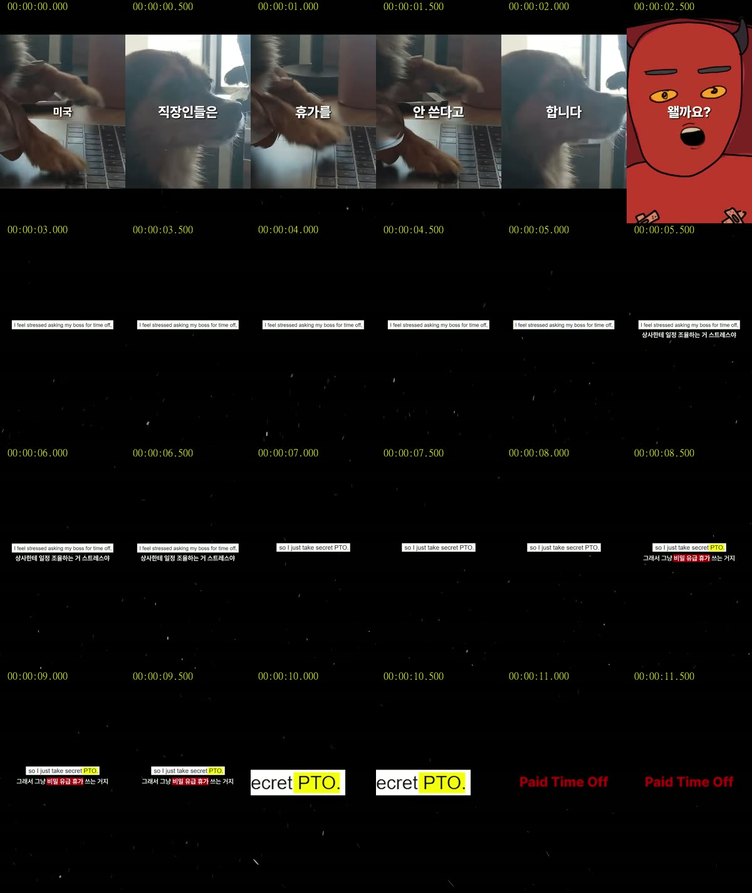
전체 흐름
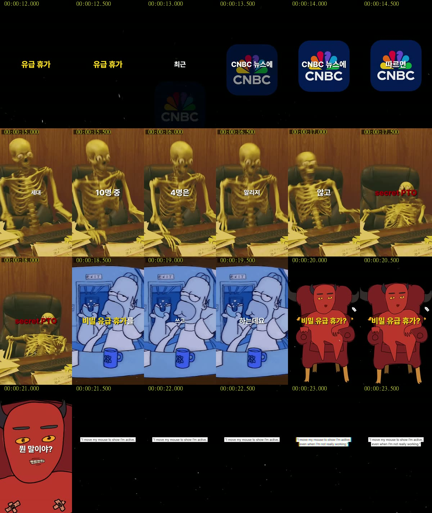
전체 흐름
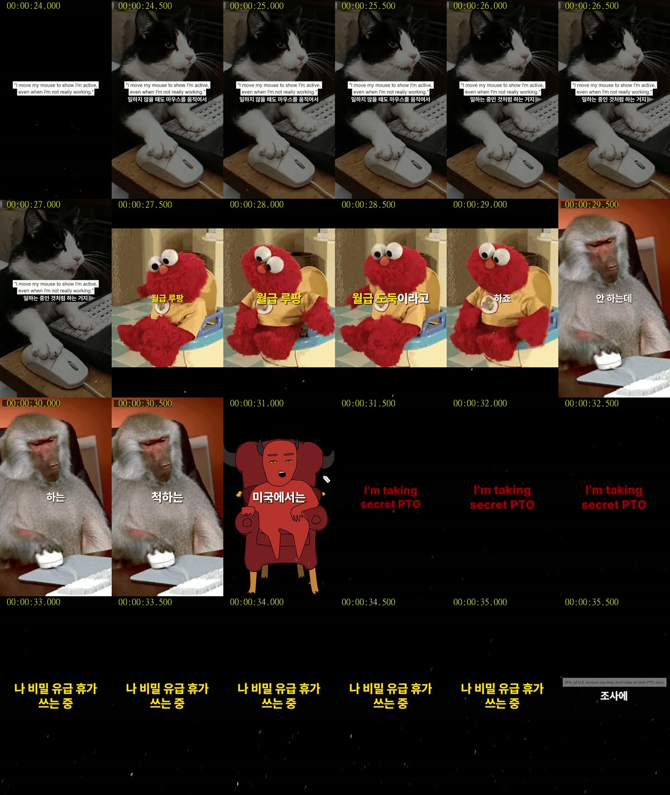
전체 흐름
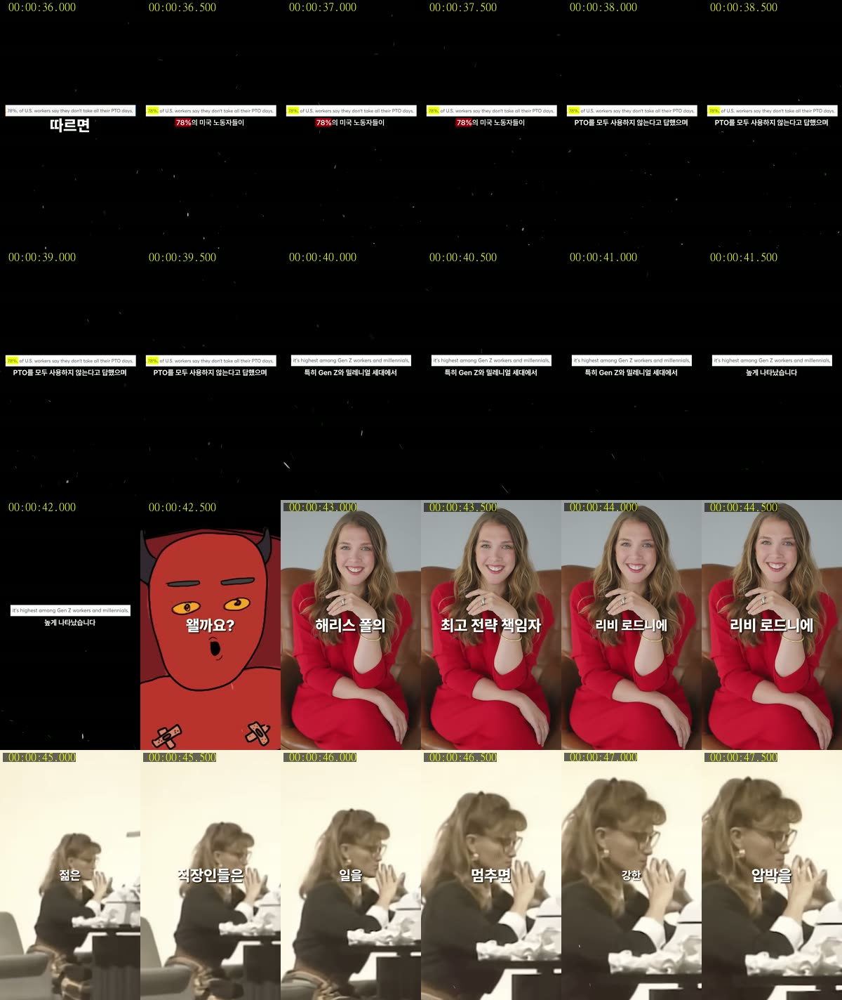
전체 흐름
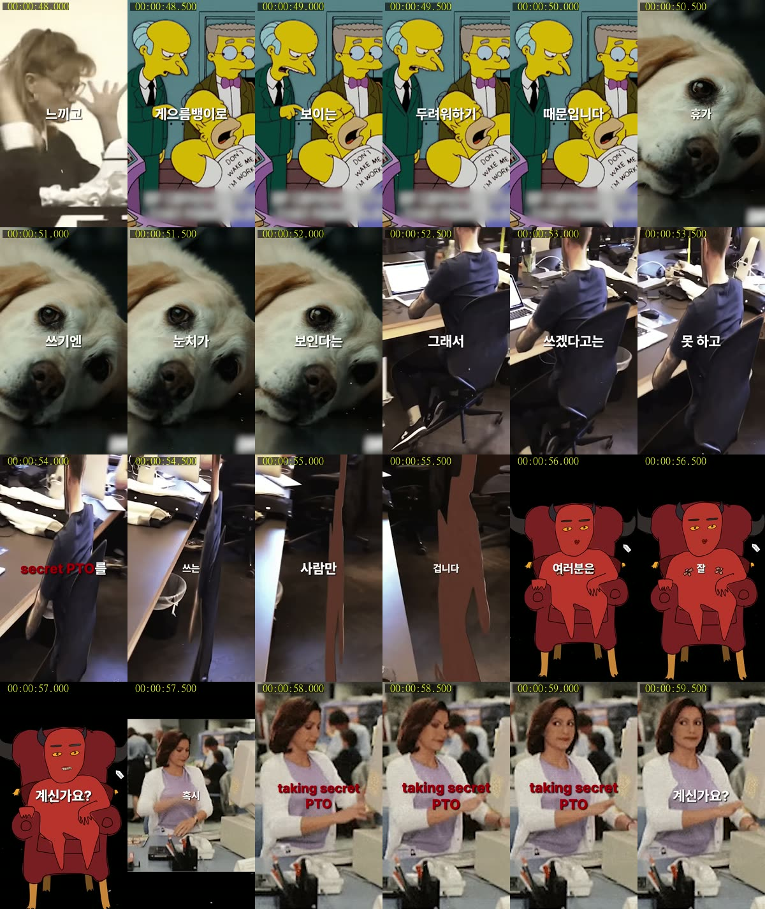